非監督式學習
Table of Contents

1. 非監督式學習

Figure 1: AI, Machine Learning與Deep Learning
1.1. 目的
非監督式學習接收未被標記的數據，並通過演算法根據資料的基礎結構(如常見的模式、特色、或是其他因素)將數據分類，而非 做出預測 。例如：
- 將網站訪客進行分類: 性別、喜好、上網時段
將一堆照片依類型分類: cat、automobile、truck、frog、ship…
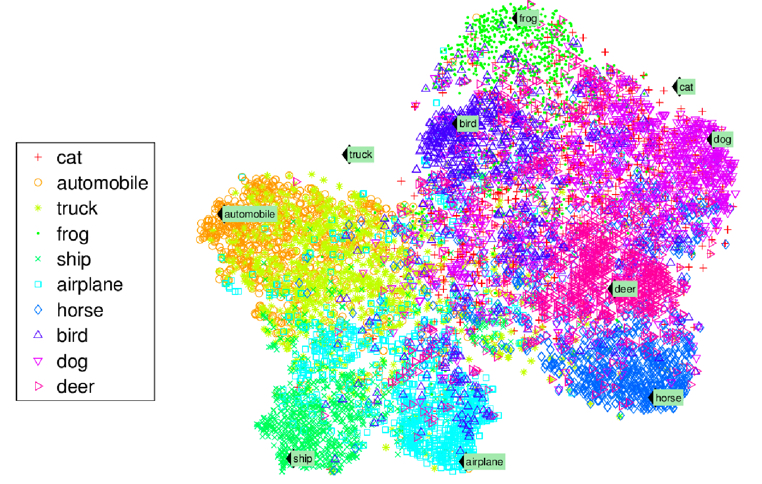
Figure 2: 照片分類
異常檢測(Anomaly Detection): 例如，找出不尋常的信用卡交易以防止詐騙、找出製程中有缺陷的產品、將資料組中的離群值挑出來再傳給另一個演算法
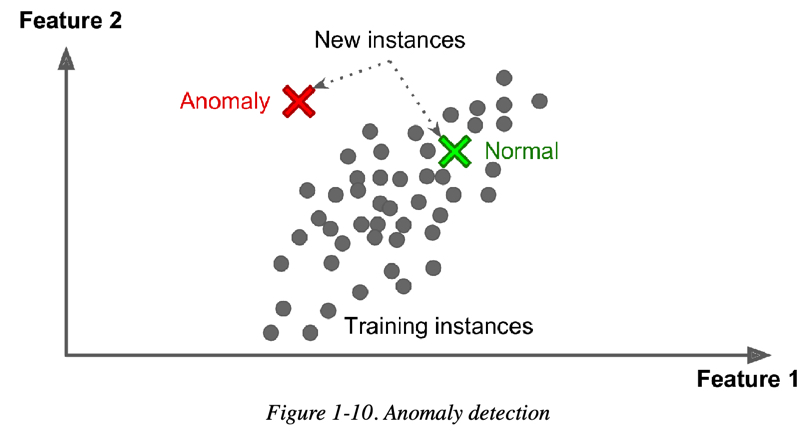
Figure 3: Novelty Detection
1.2. 非監督式學習的常見演算法
以下為非監督式學習中幾個主要任務與對應演算法：
- 分群(clustering)
為了讓相近的資料聚集在一起，通常需先將資料的特徵值數值化，再透過計算資料間的「距離」來進行分群。常使用歐幾里得距離（Euclidean distance）。常見演算法：
- K-Means：以 K 個中心點將資料分為 K 群，並反覆調整以最小化群內誤差平方和（SSE）。
- DBSCAN：基於密度的分群演算法，可辨識任意形狀的群組並標記離群點。
- 階層式分群分析（Hierarchical Cluster Analysis, HCA）：逐步合併或拆分群組形成層級樹狀結構。
- 異常檢測與新穎檢測（Anomaly & Novelty Detection）
從資料中找出偏離主要分布的樣本，常應用於欺詐偵測、工業監控等。常見方法：
- One-class SVM：使用支持向量機學習正常資料的邊界，用以識別異常點。
- 孤立森林（Isolation Forest）：利用隨機樹結構將異常點快速分離，效率高且適用高維資料。
- 降維
將高維資料投影至低維空間，以利視覺化、運算效率提升或雜訊過濾。可分為兩大類：
- 線性投影（Linear Projection）
將資料進行線性轉換，保留最大變異性或主成分。
- 主成分分析(Principal component analysis, PCA)
將資料投影到保留最多變異量的方向（主成分）上。常見變形：
- Mini-batch PCA / Incremental PCA：適合大量資料分批處理
- Kernel PCA：加入核函數進行非線性降維
- Sparse PCA：產生稀疏主成分以提升可解釋性
- 奇異值分解(Singular value decomposition, SVD)
將原始矩陣分解為秩(rank)較小的矩陣乘積，使原來的矩陣可以用秩較小的矩陣之線性組合來近似表示。簡單來說，就是把一個大矩陣拆成幾個比較簡單的小矩陣相乘，藉此壓縮或簡化資料。常用於推薦系統、LDA、語意分析等領域。
- 隨機投影(Random projection)
將高維資料以隨機矩陣映射到低維空間，且大致保留資料之間的距離關係。可以使用隨機高斯矩陣（random Gaussian matrix)或隨機稀疏矩陣(random sparse matrix)來實現。可使用：
- 隨機高斯矩陣（random Gaussian matrix）
- 隨機稀疏矩陣（random sparse matrix）
- 主成分分析(Principal component analysis, PCA)
- 非線性降維（Nonlinear Dimensionality Reduction）
假設資料分布於低維流形（manifold）上，透過學習鄰近關係進行嵌入。分為幾個常見方法族群：
- 流形學習(Manifold learning)
- Isomap: 透過 近鄰之間的捷徑距離（geodesic distance） 建立全局流形結構的低維表示。是 MDS（多維尺度轉換）的延伸。
- t-SNE（t-distributed Stochastic Neighbor Embedding）: 將高維資料嵌入至 2D 或 3D 空間，強調保留鄰近點關係。非常適合視覺化高維資料，如詞向量、圖像特徵等。
- 多維尺度轉換（Multidimensional Scaling, MDS）: 依據樣本間距離將資料配置於低維空間，使低維中的距離盡可能與高維中相似。
- 局部線性嵌入（Locally Linear Embedding, LLE）: 假設每個點可由其鄰居線性重建，透過這些重建權重學習低維嵌入。
- 詞典學習（Dictionary Learning）: 尋找一組稀疏基底來表示資料，可用於特徵提取與壓縮。
- 隨機樹嵌入（Random Trees Embedding）: 使用隨機樹（例如隨機森林）建立非線性轉換，以獲得資料的新表徵。
- 獨立成分分析（Independent Component Analysis, ICA）: 與 PCA 相對，將資料分解為統計上彼此獨立的成分，常用於信號分離。
- 核方法（Kernel-based Methods）
將資料映射到高維特徵空間，再進行線性降維（如 PCA）：
- Kernel PCA（核主成分分析）: 加入核技巧使 PCA 能捕捉非線性結構
- Kernel LDA（核線性判別分析）: 非線性版本的線性判別分析
- 神經網路類降維（Neural network-based）
透過神經網路結構學習低維表示：
- Autoencoder（自編碼器）: 一種非監督式神經網路，將資料壓縮再還原，潛在層即為降維表示
- Variational Autoencoder（VAE）: 在 autoencoder 架構中加入機率分佈與正規化
- Parametric t-SNE：結合神經網路對 t-SNE 進行擬合，支援新資料投影
- 其他統計或圖論導向方法
- UMAP（Uniform Manifold Approximation and Projection）：兼顧局部與全局結構，速度快，近年來熱門視覺化方法
- Diffusion Maps、Spectral Embedding 等：使用鄰接圖和特徵值分解學習嵌入
- 流形學習(Manifold learning)
- 線性投影（Linear Projection）
2. K-Means Clustering
- 先來這裡(K-Means Clustering Demo)試一下什麼是K-Means Clustering。
- 「分群」的概念簡單來說就是將相近的資料彼此分在同一群體。
- K-means演算法：將n個點劃分到K個聚落中，如此一來每個點都屬於離其最近的聚落中心所對應之聚落，以之作為分群的標準。
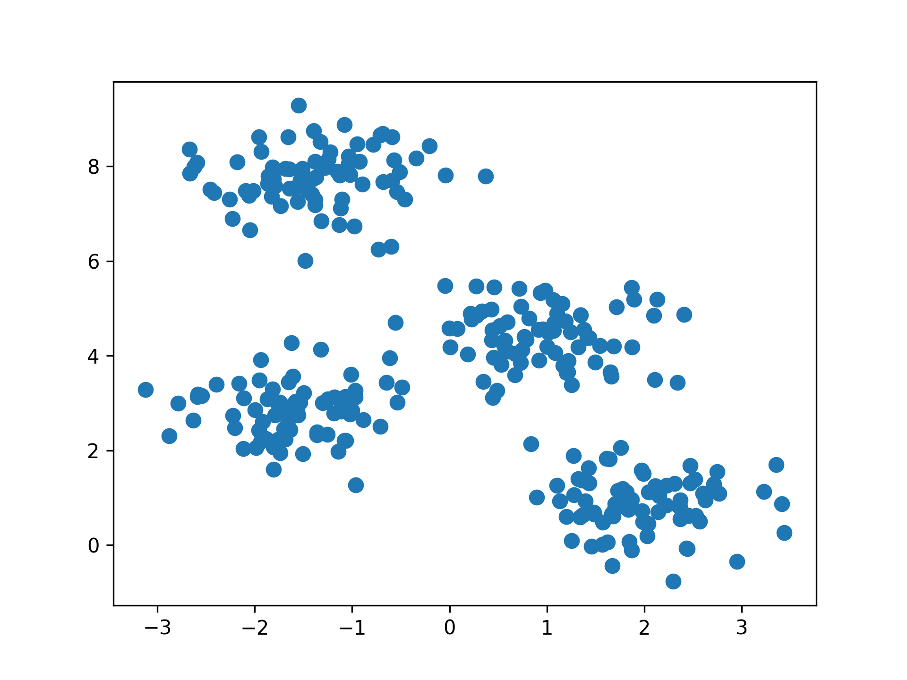
Figure 4: scikit-learn blobs
2.1. K-Means原理
八張未標註動物名稱(標籤)的照片，每張照片有兩個特徵值
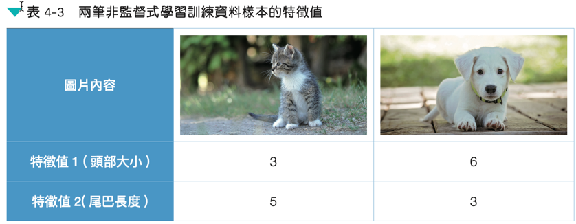
Figure 5: 資料庫樣本
八張照片的特徵分佈如下
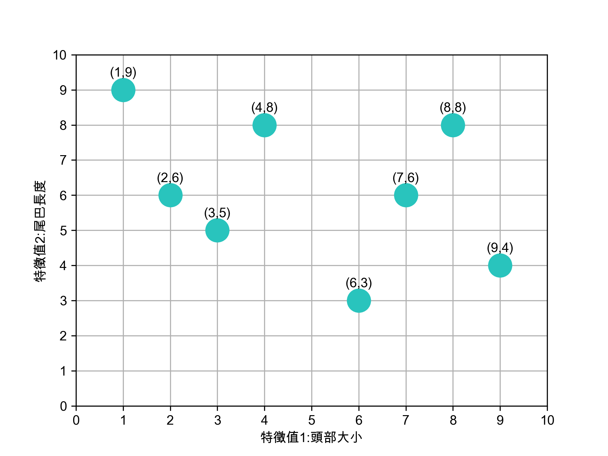
Figure 6: 待處理資料
K-means 演算法執行步驟如下:
- 決定K值
K 值指的是現有訓練資料(八張照片)要分成的群數，此處K值為2。
- 選定K個中心點
任意選定 K 個(K=2)中心點，在實際的程式實作可以亂數隨機產生這K個資料點。如圖7所示，隨機指定的兩群資料點的中心點為(5，5)、(6，9)。
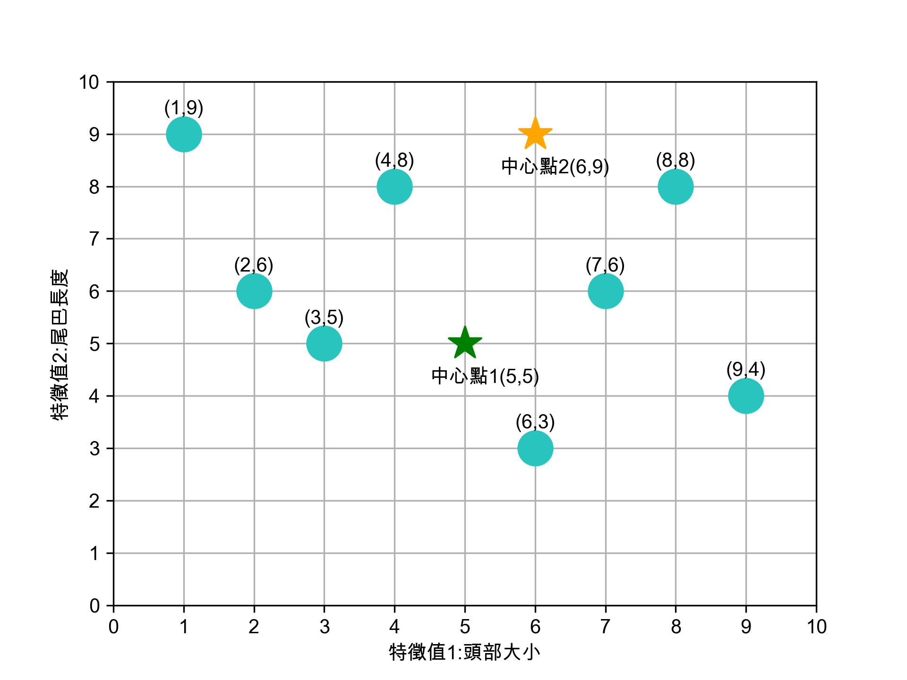
Figure 7: 隨機選定兩個中心點
- 將資料點分群
- 為 K 個群裡的資料點找出新中心點
依前一步驟的分類，此 8 張資料點已分為兩群，
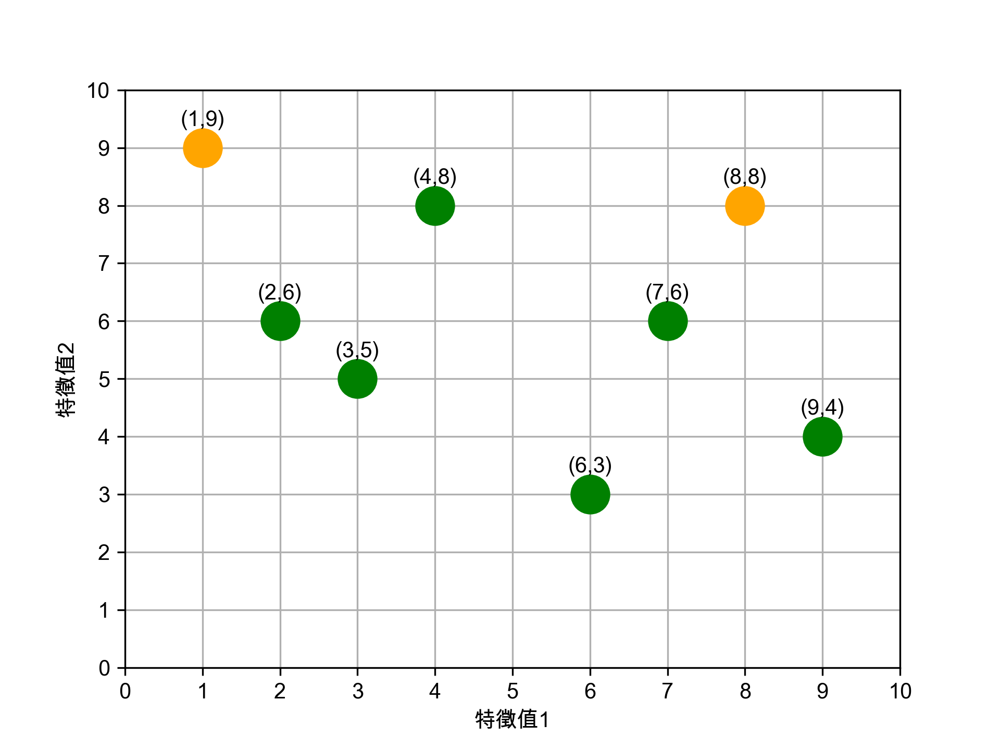
Figure 11: 第一輪分群後的資料點
接下來我們再為這兩群資料點找出各自的新中心點，計算方式如下:
- 新★X值: (2+3+4+6+7+9)/6 = 31/6 = 5.17
- 新★Y值: (6+5+8+3+6+4)/6 = 32/6 = 5.33
- 新★X值: (1+8)/2 = 9/2 = 4.50
- 新★Y值: (9+8)/2 = 17/2 = 8.50
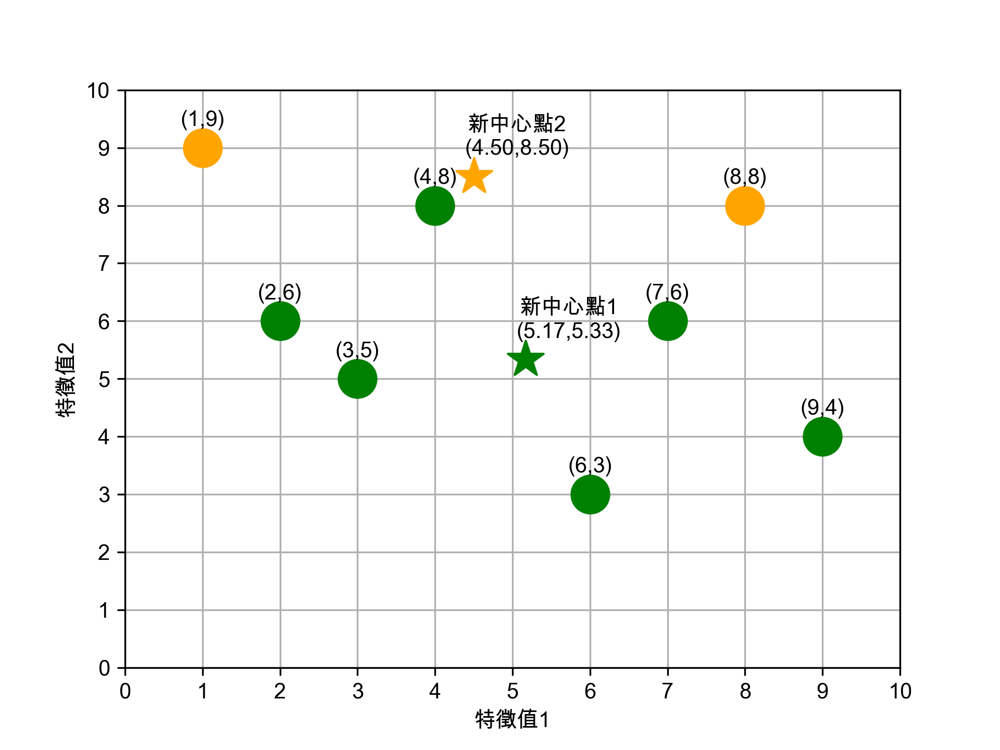
Figure 12: 重新計算中心點
這個結果看起來不太合理對吧，至少(4,8)這點應該要歸入★這組才對。沒關係，因為還沒完成。
- 5. 第二輪分群
接下來用第一輪算出的新中心點★(5.17, 5.33)、★(4.50, 8.50)，重新計算每個資料點到兩個中心點的距離，依距離重新分群。
- 5-1. 計算各點到新中心點1的距離
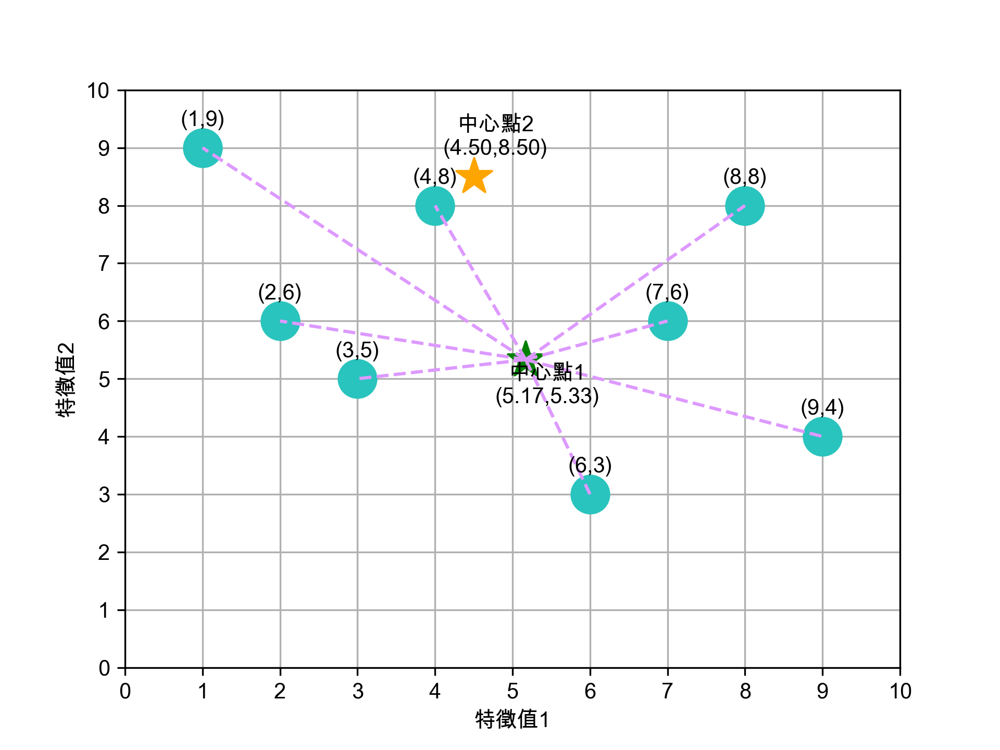
Figure 13: 各點到新中心點1(5.17, 5.33)的距離
- 5-2. 計算各點到新中心點2的距離
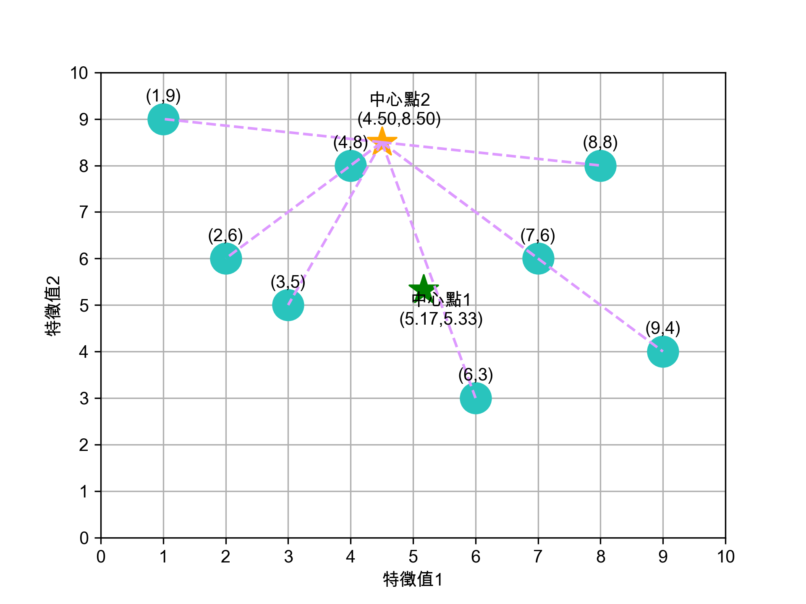
Figure 14: 各點到新中心點2(4.50, 8.50)的距離
- 5-3. 第二輪距離計算結果
將各點到兩個中心點的距離整理如下，依距離較近者決定歸屬：
資料點 到★(5.17,5.33)的距離 到★(4.50,8.50)的距離 歸入 (1,9) 5.51 3.54 ★ (2,6) 3.24 3.54 ★ (3,5) 2.18 3.81 ★ (4,8) 2.93 0.71 ★ (6,3) 2.46 5.67 ★ (7,6) 1.94 3.54 ★ (8,8) 3.86 3.54 ★ (9,4) 4.04 6.26 ★ 第二輪分群結果：
- ★組：(2,6), (3,5), (6,3), (7,6), (9,4)
- ★組：(1,9), (4,8), (8,8)
接著再為這兩群計算新的中心點：
- 新★X值: (2+3+6+7+9)/5 = 5.40
- 新★Y值: (6+5+3+6+4)/5 = 4.80
- 新★X值: (1+4+8)/3 = 4.33
- 新★Y值: (9+8+8)/3 = 8.33

Figure 15: 第二輪分群結果與新中心點
注意跟第一輪的差異：(4,8) 從★組搬到了★組，分群變得更合理了。
- 5-4. 第二輪分群結果
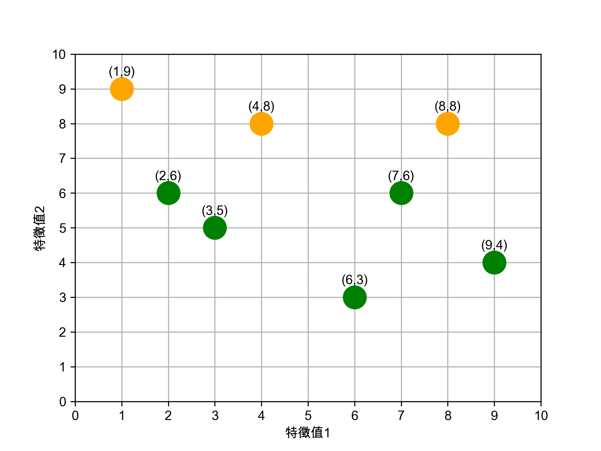
Figure 16: 第二輪分群結果
- 5-5. 計算第二輪的新中心點
為這兩群計算新的中心點：
- 新★X值: (2+3+6+7+9)/5 = 5.40
- 新★Y值: (6+5+3+6+4)/5 = 4.80
- 新★X值: (1+4+8)/3 = 4.33
- 新★Y值: (9+8+8)/3 = 8.33
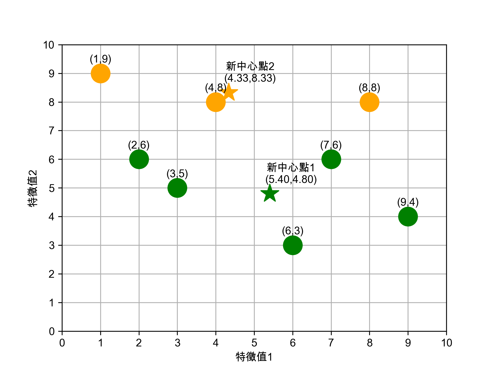
Figure 17: 第二輪新中心點
- 5-1. 計算各點到新中心點1的距離
- 6. 持續迭代直到分群結果不再變化
繼續用同樣的方式重覆步驟 (3)、(4)——計算距離、重新分群、更新中心點——直到分群結果不再變動即告完成。實際上這筆資料用第二輪的新中心點(5.40, 4.80)和(4.33, 8.33)再跑一輪，分群結果跟第二輪完全一樣，演算法收斂。
- 課堂練習：動手實作 K-Means
你已經知道 K-Means 的運作原理了——計算距離、分群、更新中心點、重覆直到收斂。現在請你用 Python 把它從零實作出來，不靠 sklearn，純手工打造。能自己寫出來的人，才是真正懂演算法的人（而不是只會
import的工具人）。- 範例：K=2，先拿 6 個點暖身
以下 6 個點明顯分成左下角和右上角兩群，用 K=2 跑看看：
1: import numpy as np 2: 3: # 6 個資料點 4: data = np.array([ 5: [1, 1], [2, 1], [1, 2], # 左下角 6: [8, 8], [9, 9], [8, 9] # 右上角 7: ]) 8: K = 2 9: 10: # 隨機選 K 個點當初始中心 11: np.random.seed(42) 12: idx = np.random.choice(len(data), K, replace=False) 13: centers = data[idx].copy().astype(float) 14: print(f"初始中心點: {centers.tolist()}") 15: 16: for iteration in range(100): 17: # Step 1: 計算每個點到各中心的距離，分配到最近的群 18: labels = [] 19: for point in data: 20: distances = [np.sum((point - c) ** 2) for c in centers] 21: labels.append(np.argmin(distances)) 22: labels = np.array(labels) 23: 24: # Step 2: 重新計算各群的中心點 25: new_centers = np.array([data[labels == k].mean(axis=0) for k in range(K)]) 26: 27: print(f"\n第 {iteration+1} 輪:") 28: print(f" 分群結果: {labels.tolist()}") 29: print(f" 新中心點: {new_centers.tolist()}") 30: 31: # Step 3: 如果中心點不再變化，就收斂了 32: if np.allclose(centers, new_centers): 33: print(f"\n收斂！共花了 {iteration+1} 輪") 34: break 35: centers = new_centers 36: 37: # 顯示最終結果 38: print(f"\n=== 最終分群 ===") 39: for k in range(K): 40: members = data[labels == k] 41: print(f"Cluster {k}: {members.tolist()} → 中心 ({centers[k][0]:.2f}, {centers[k][1]:.2f})")
你應該會看到幾輪就收斂，左下角和右上角各一群，非常直覺。
- 你的任務：K=4，把 10 個點分成四群
以下 10 個點散落在四個角落，請修改上面的程式碼，改用 K=4 對這些資料進行分群：
data = np.array([ [1, 1], [2, 1], [1, 2], # 左下角 [8, 1], [9, 2], # 右下角 [1, 8], [2, 9], # 左上角 [8, 8], [9, 9], [8, 9] # 右上角 ]) K = 4
提示：只需要改兩個地方——資料和 K 值。其他邏輯完全不變。
- 預期正確答案
你的程式應該在 3 輪內收斂，分出四個角落的群（群的編號可能不同，但成員要一樣）：
左下角: (1,1), (2,1), (1,2) → 中心 (1.33, 1.33) 右下角: (8,1), (9,2) → 中心 (8.50, 1.50) 左上角: (1,8), (2,9) → 中心 (1.50, 8.50) 右上角: (8,8), (9,9), (8,9) → 中心 (8.33, 8.67)
如果你的結果跟上面一樣，恭喜你成功從零實作了 K-Means！如果不一樣……回去重看一次演算法步驟吧，它沒有想像中難。
- 範例：K=2，先拿 6 個點暖身
- 如何訂K值
用K-means演算法需設定「K值」，但難免會面臨難以決定分群數量的狀況。同樣的資料如果要分成3群、4群、5群，就必須做三次不同的操作，而且分群的結果彼此之間不一定有其關聯性。
要判斷哪個 K 值比較好，我們需要一個「分群品質」的指標。但分群是非監督式學習——沒有標準答案可以對照，那要怎麼評估？
- Inertia（群內誤差平方和）
Inertia 的「誤差」不是跟標準答案比，而是每個點跟 自己所屬群的中心點 之間的距離平方和。它衡量的是「群內的緊密程度」——同一群的點離中心越近，inertia 越小，表示分得越緊密。
公式：
\(\text{Inertia} = \sum_{i=1}^{K} \sum_{x \in C_i} \|x - \mu_i\|^2\)
其中 \(C_i\) 是第 \(i\) 群的資料點集合，\(\mu_i\) 是第 \(i\) 群的中心點。
用前面第二輪的分群結果舉例：
- ★組中心 (5.40, 4.80)，成員 (2,6), (3,5), (6,3), (7,6), (9,4)
- ★組中心 (4.33, 8.33)，成員 (1,9), (4,8), (8,8)
★組的群內誤差：
\((2{-}5.4)^2{+}(6{-}4.8)^2 + (3{-}5.4)^2{+}(5{-}4.8)^2 + (6{-}5.4)^2{+}(3{-}4.8)^2 + (7{-}5.4)^2{+}(6{-}4.8)^2 + (9{-}5.4)^2{+}(4{-}4.8)^2 = 13.00 + 5.80 + 3.60 + 4.00 + 13.60 = 40.00\)
★組的群內誤差：
\((1{-}4.33)^2{+}(9{-}8.33)^2 + (4{-}4.33)^2{+}(8{-}8.33)^2 + (8{-}4.33)^2{+}(8{-}8.33)^2\) \(= 11.56 + 0.22 + 13.56 = 25.34\)
\(\text{Inertia} = 40.00 + 25.34 = 65.34\)
直覺上：群越緊密 → 每個點離中心越近 → 距離平方越小 → Inertia 越小。所以 Inertia 越小表示分群品質越好。
但有個陷阱：*K 值越大，Inertia 一定越小*。極端情況下每個點自己一群，Inertia 直接歸零——但這樣的分群毫無意義。所以不能單純追求最小值，需要搭配手肘法來找「合理的」K 值。
- 手肘法（Elbow Method）
最常見的方式是嘗試不同的 K 值，觀察 Inertia 隨 K 值的變化曲線，找到曲線斜率急遽變緩的「手肘」轉折點，該點對應的 K 值即為合理的分群數。
以下用 30 筆資料示範手肘法——嘗試 K=1~10，畫出 inertia 折線圖，找到那個「手肘」在哪裡：
1: from sklearn.cluster import KMeans 2: import matplotlib.pyplot as plt 3: 4: # 30 筆 (x, y) 資料 5: X = [[25,79],[34,51],[22,53],[27,78],[33,59],[33,74],[31,73],[22,57],[35,69],[34,75], 6: [67,51],[54,32],[57,40],[43,47],[50,53],[57,36],[59,35],[52,58],[65,59],[47,50], 7: [49,25],[48,20],[35,14],[33,12],[44,20],[45,5],[38,29],[43,27],[51,8],[46,7]] 8: 9: inertias = [] 10: for k in range(1, 11): 11: km = KMeans(n_clusters=k, random_state=42, n_init=10) 12: km.fit(X) 13: inertias.append(km.inertia_) 14: print(f"K={k:2d} inertia={km.inertia_:8.1f}") 15: 16: plt.plot(range(1, 11), inertias, 'bo-') 17: plt.xlabel('K') 18: plt.ylabel('Inertia（群內誤差平方和）') 19: plt.title('Elbow Method') 20: plt.grid(True) 21: plt.savefig('images/elbow-demo.png', dpi=300) 22: print("\n觀察圖形：K=3 處斜率急遽變緩，就是「手肘」轉折點")
K= 1 inertia= 19581.8 K= 2 inertia= 7425.4 K= 3 inertia= 3649.5 K= 4 inertia= 2698.4 K= 5 inertia= 1966.1 K= 6 inertia= 1389.2 K= 7 inertia= 945.2 K= 8 inertia= 683.8 K= 9 inertia= 551.5 K=10 inertia= 437.3 觀察圖形：K=3 處斜率急遽變緩，就是「手肘」轉折點
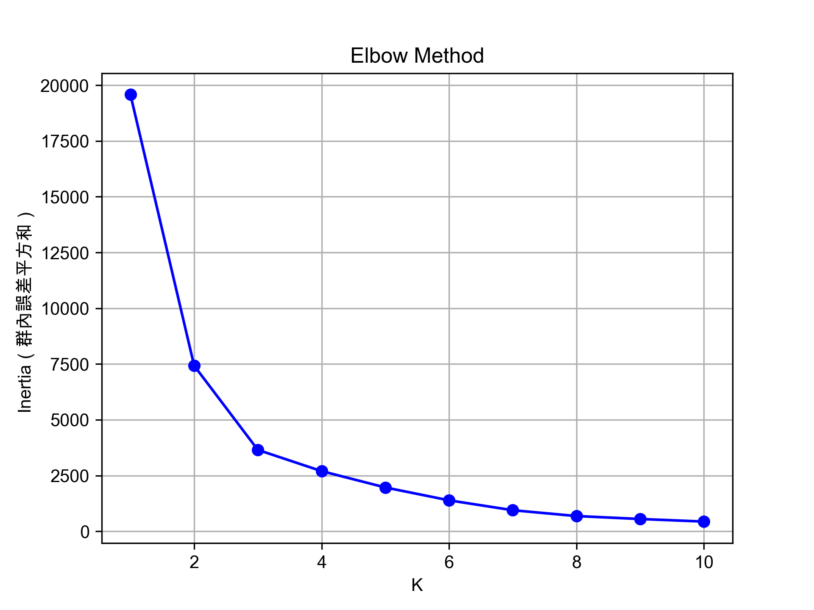
Figure 18: 手肘法示範
- Inertia（群內誤差平方和）
2.2. K-Means實作:隨機數字 sklearn
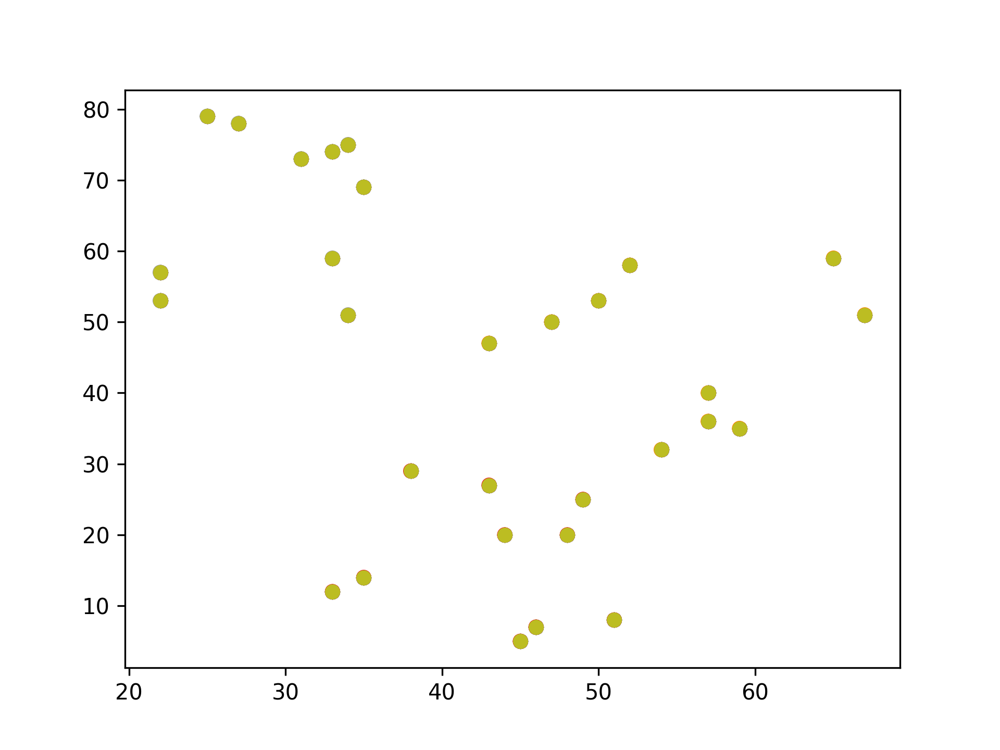
Figure 19: 原始資料
1: # 隨機生成100個(x, y) 2: import pandas as pd 3: data = { 4: 'x': [25, 34, 22, 27, 33, 33, 31, 22, 35, 34, 67, 54, 57, 43, 50, 57, 59, 52, 65, 47, 49, 48, 35, 33, 44, 45, 38, 5: 43, 51, 46], 6: 'y': [79, 51, 53, 78, 59, 74, 73, 57, 69, 75, 51, 32, 40, 47, 53, 36, 35, 58, 59, 50, 25, 20, 14, 12, 20, 5, 29, 27, 7: 8, 7] 8: } 9: samples = pd.DataFrame(data) 10: 11: import matplotlib.pyplot as plt 12: from sklearn.cluster import KMeans 13: 14: kmeans = KMeans(n_clusters=3) #預計分為三群，迭代次數由模型自行定義 15: kmeans.fit(samples) 16: cluster = kmeans.predict(samples) 17: 18: plt.scatter(samples['x'], samples['y'], c=cluster, cmap=plt.cm.Set1) 19: plt.savefig("images/kmeansScatter.png", dpi=300) 20: #plt.show()
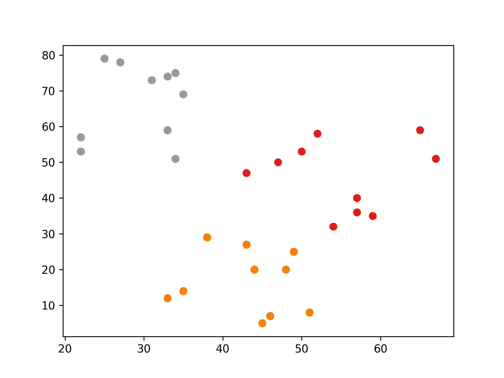
Figure 20: scikit-KMeans
2.3. K-Means應用: 壓縮影像
1: import numpy as np 2: import matplotlib.pyplot as plt # 需安裝 pillow 才能讀 JPEG 3: from matplotlib import image 4: from sklearn.cluster import MiniBatchKMeans 5: 6: # K 值 (要保留的顏色數量) 7: K = 4 8: # 讀取圖片 9: image = image.imread(r'./images/Photo42.jpg') 10: w, h, d = tuple(image.shape) 11: image_data = np.reshape(image, (w * h, d))/ 255 12: # 將顏色分類為 K 種 13: kmeans = MiniBatchKMeans(n_clusters=K, batch_size=10) 14: labels = kmeans.fit_predict(image_data) 15: centers = kmeans.cluster_centers_ 16: # 根據分類將顏色寫入新的影像陣列 17: image_compressed = np.zeros(image.shape) 18: label_idx = 0 19: for i in range(w): 20: for j in range(h): 21: image_compressed[i][j] = centers[labels[label_idx]] 22: label_idx += 1 23: 24: plt.imsave(r'images/compressTest.jpg', image_compressed)
Figure 21: 以KMeans壓縮圖片色彩
2.4. [小組作業]K-Means分群實作 TNFSH
以K-Means對鳶尾花資料(特徵值)進行分群
作業內容須包含:
- 程式碼
- 以不同特徵值(\(C^4_2\))配對進行cluster，畫出scatter
- 以不同特徵值(\(C^4_3\))配對進行cluster，畫出3D scatter
- 對於輸出之結果應輔以文字說明解釋。
- 以pdf繳交報告，報告首頁需列出組員列表(姓名、教學網ID)
2.5. [小組作業]以K-Means壓縮影像實作 TNFSH
參考前述[K-Means應用: 壓縮影像]，自行找一張圖(jpg)進行以下測試
- 以不同K值、batchSize進行影像壓縮，並探討在不同情況下的壓縮效果(包含影像大小及品質)
- 以不同類型(顏色數量:全彩、256色、灰階)的圖片進行測試
- 對於輸出之結果應輔以文字說明解釋。
- 以pdf繳交報告，報告首頁需列出組員列表(姓名、教學網ID)
3. Hierarchical clustering
階層式分群法(Hierarchical Clustering)透過一種階層架構的方式，將資料層層反覆地進行分裂或聚合，以產生最後的樹狀結構，常見的方式有兩種：
聚合式階層分群法(Agglomerative Clustering): 是一種“bottom-up”的方法，也就是先準備好解決問題可能所需的基本元件或方案，再將這些基本元件組合起來，由小而大最後得到整體。因此在階層式分群法中，就是將每個資料點都視為一個個體，再一一聚合1，如圖222。
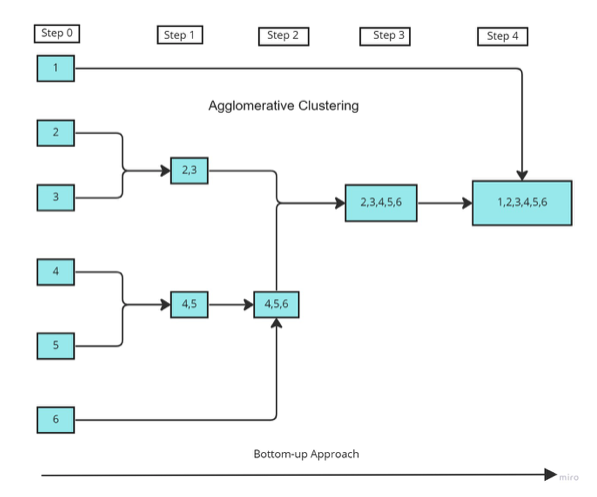
Figure 22: Bottom-up
分裂式階層分群法(Divisive Clustering): 是一種“top-down”的方法，先對問題有整體的概念，然後再逐步加上細節，最後讓整體的輪廓越來越清楚。而此法在階層式分群法中，先將整個資料集視為一體，再一一的分裂1，如圖232。
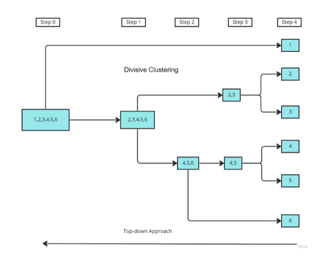
Figure 23: Top-down
3.1. 聚合式階層分群法(Agglomerative)
如果採用聚合的方式，階層式分群法可由樹狀結構的底部開始，將資料或群聚逐次合併。
聚合式階層分群步驟：
- 將各個資料點先視為個別的「群」。
- 比較各個群之間的距離，找出距離最短的兩個群。
- 將其合併變成一個新群。
- 不斷重複直到群的數量符合所要求的數目。
- 聚合式階層分群: step by step
假設現在有6筆資料，分別標記A、B、C、D、E及F，且每筆資料都是一個群。
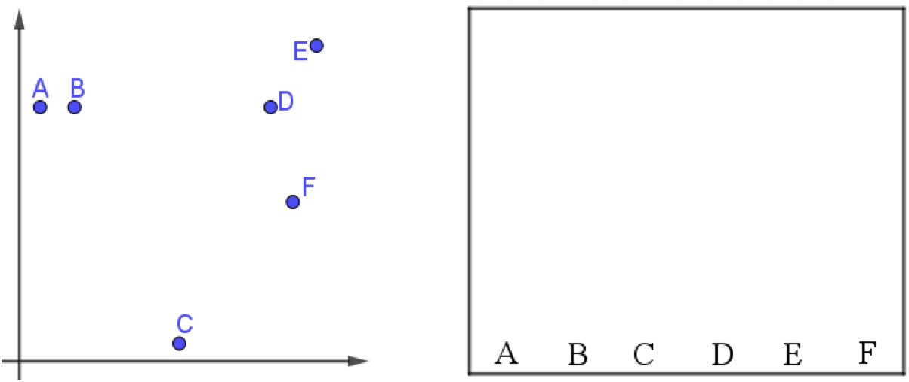
Figure 24: hierar-1
首先找距離最近的兩個群，在此例為A、B。將A與B結合為新的一群G1，就將這些點分成五群了，其中有四群還是單獨的點。
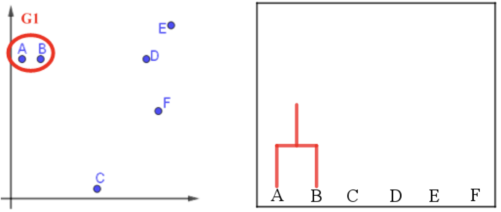
Figure 25: 聚合步驟2: A與B合併為G1
接著，再繼續找距離最近的兩個群，依此範例應為D與E，結合為新的一群G2。
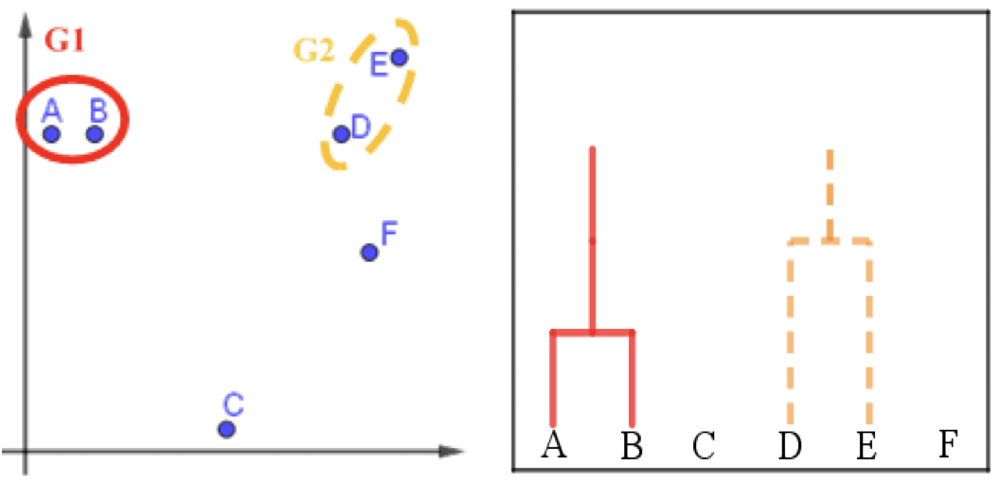
Figure 26: 聚合步驟3: D與E合併為G2
將F與G2合而為新的群G3，這時，這些資料已經被分為三群了。
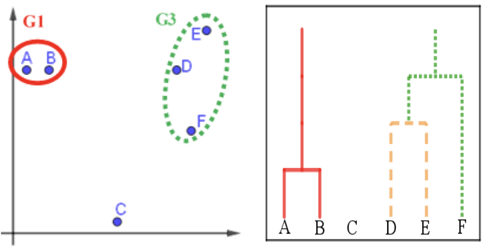
Figure 27: 聚合步驟4: F與G2合併為G3
- 如何定義兩個群聚之間的距離
- 單一連結聚合
Single-linkage agglomerative algorithm, 群聚與群聚間的距離可以定義為不同群聚中最接近兩點間的距離。
在分屬不同的兩群中，選擇最接近的兩點之距離，即代表兩群間的距離。因此在群與群間進行聚合時，依據此值最小者做為選取下一步結合之對象。
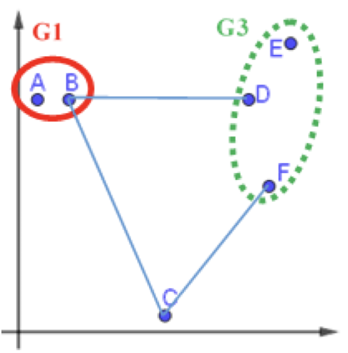
Figure 28: 單一連結聚合示意圖
公式: \( d(G1, G2)=\min\limits_{ A \in G1, B \in G2 } d(A,B)\)
G1、G3與C之間如何聚合？
- G1與C之間的距離d(G1,C)＝d(B,C)
- G3與C之間的距離d(G3,C)＝d(F,C)
- G1與G3之間的距離d(G1,G3)＝d(B,D)
計算完各群間的距離後，可知d(G3,C)為最短距離，因此G3將與C聚合，成為新群G4。
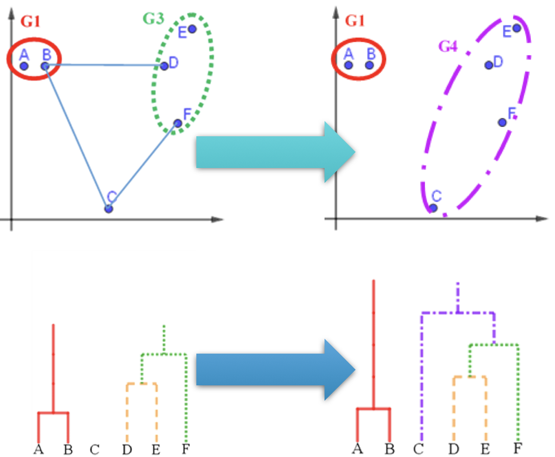
Figure 29: 單一連結: G3與C聚合為G4
倘若要再聚合，由於剩下G1與G4，可聚合成為G5。
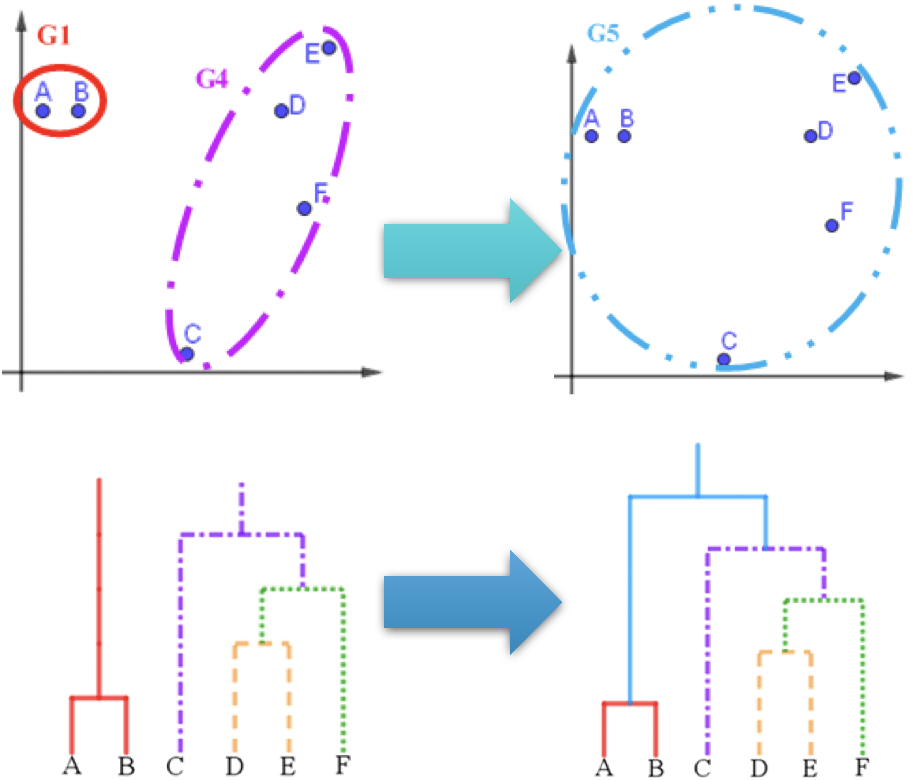
Figure 30: 單一連結: G1與G4聚合為G5
- 完整連結聚合
Complete-linkage agglomerative algorithm, 群聚間的距離定義為不同群聚中最遠兩點間的距離，這樣可以保證這兩個集合合併後, 任何一對的距離不會大於 d。
在分屬不同的兩群中，選擇最遠的兩點之距離，即代表兩群間的距離。因此在群與群間進行聚合時，依據此值最小者做為選取下一步結合之對象。
公式: \(d(G1,G2)=\max\limits_{A \in G1, B \in G2}d(A,B)\)
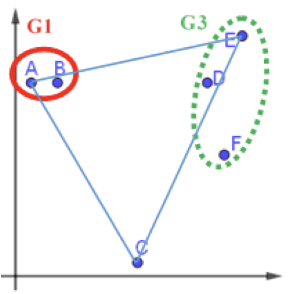
Figure 31: 完整連結聚合示意圖
G1、G3與C之間如何聚合？
- G1與C之間的距離d(G1,C)＝d(A,C)
- G3與C之間的距離d(G3,C)＝d(E,C)
- G1與G3之間的距離d(G1,G3)＝d(A,E)
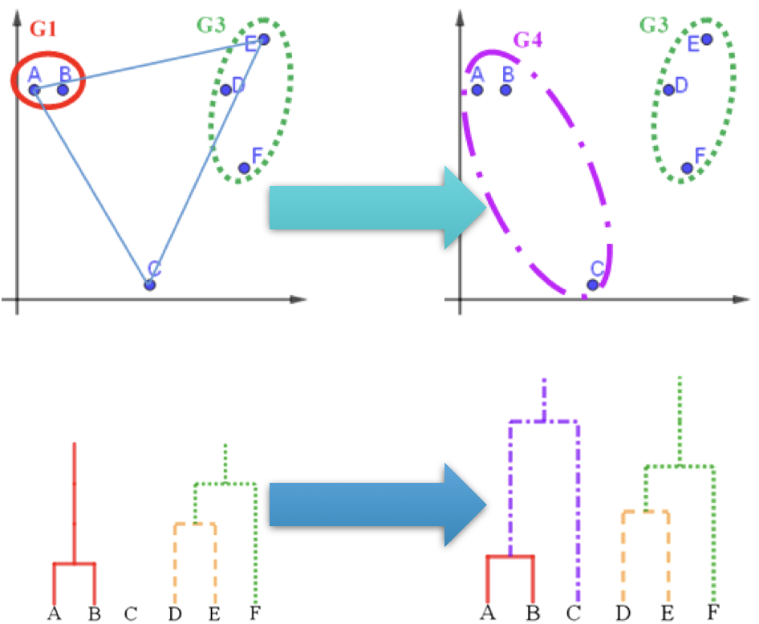
Figure 32: 完整連結: 距離計算
計算完各群間的距離後，可知d(G1,C)為最短距離，因此G1將與C聚合，成為新群G4。
倘若要再聚合，由於剩下G3與G4，可聚合成為G5。
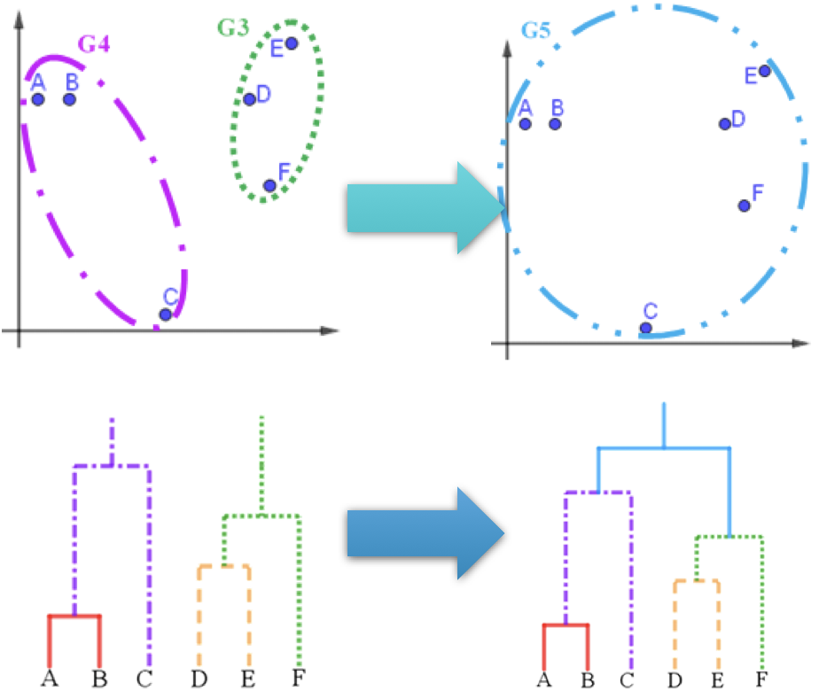
Figure 33: 完整連結: G3與G4聚合為G5
- 平均連結聚合
Average-linkage agglomerative algorithm, 群聚間的距離定義為不同群聚間各點與各點間距離總和的平均。沃德法（Ward’s method）：群聚間的距離定義為在將兩群合併後，各點到合併後的群中心的距離平方和。
在分屬不同的兩群中，各點之距離的平均，即代表兩群間的距離。因此在群與群間進行聚合時，依據此值最小者做為選取下一步結合之對象。 G1、G3與C之間如何聚合？
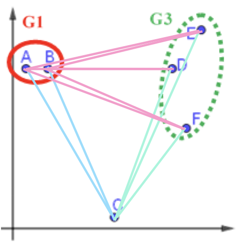
Figure 34: 平均連結聚合示意圖
公式: \(d(G1,G2)=\sum\limits_{A \in G1, B \in G2}\frac{d(A,B)}{|G1|\times|G2|}\)
- \( d(G1, C)=\frac{d(A,C)+d(B,C)}{2\times1}\)
- \( d(G3, C)=\frac{d(D,C)+d(E,C)+d(F,C)}{3\times1}\)
- \( d(G1, G3)=\frac{d(A,D)+d(A,E)+d(A,F)+d(B,D)+d(B,E)+d(B,F)}{2\times3}\)
- 單一連結聚合
- 決定群數
可以依照使用者的群數需求或相似度要求，來決定要在哪一層時停止聚合資料。若以完整連結的群間距離計算方式為例，圖上的虛線代表不同的群數，端看使用者需求來決定。
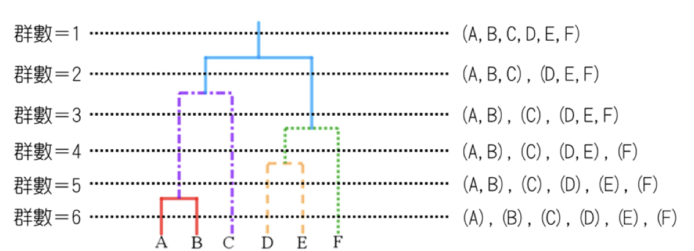
Figure 35: 決定群數示意圖
- 聚合式階層分群實作
- scikit-learn: Agglomerative Clustering
- 分兩群
1: from sklearn.cluster import AgglomerativeClustering 2: import matplotlib.pyplot as plt 3: import numpy as np 4: 5: # randomly chosen dataset 6: X = np.array([[1, 2], [1, 4], [1, 0], [2, 1], [2, 3], [2, 4], 7: [3, 1], [3, 3], [3, 4], [4, 2], [4, 4], [4, 0]]) 8: clustering = AgglomerativeClustering(n_clusters = 2).fit(X) 9: print('分兩群:',clustering.labels_)
分兩群: [0 1 0 0 1 1 0 1 1 0 1 0]
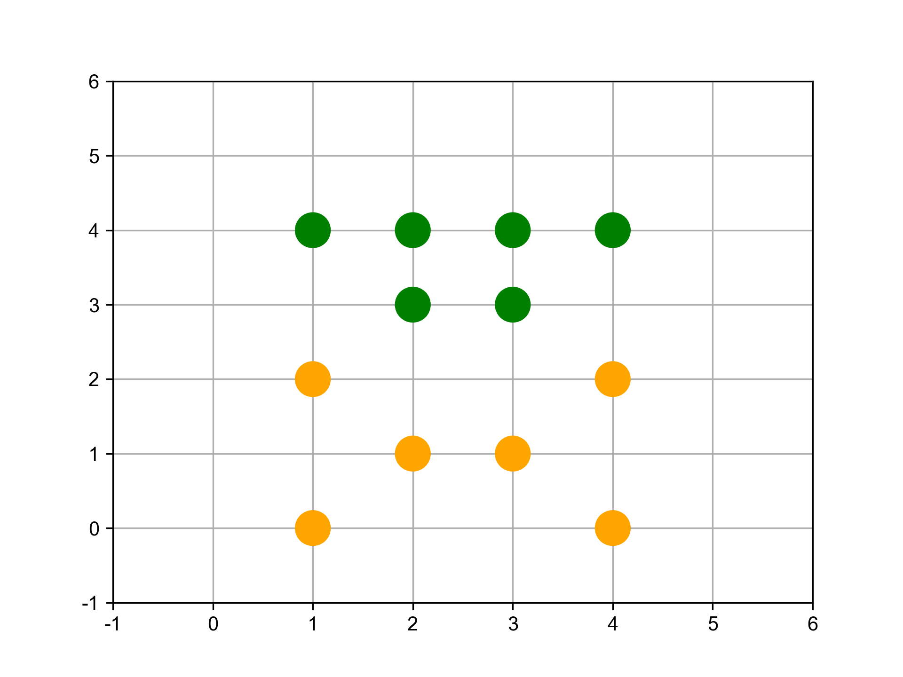
Figure 36: 分成兩組
- 分三群
1: clustering = AgglomerativeClustering(n_clusters = 3).fit(X) 2: print('分三群:',clustering.labels_)
分三群: [1 0 1 1 0 0 1 0 0 2 0 2]
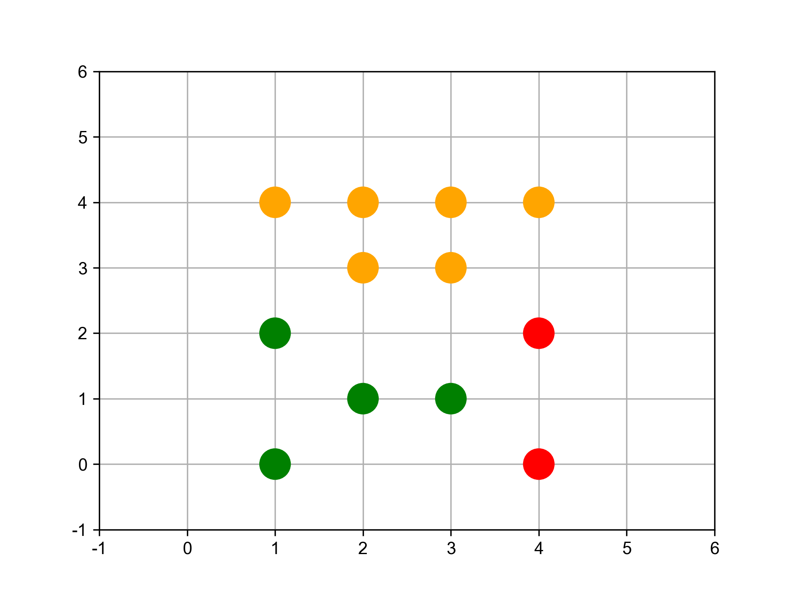
Figure 37: 分成三群
- 分四群
1: clustering = AgglomerativeClustering(n_clusters = 4).fit(X) 2: print('分四群:',clustering.labels_)
分四群: [0 3 0 0 3 3 0 1 1 2 1 2]
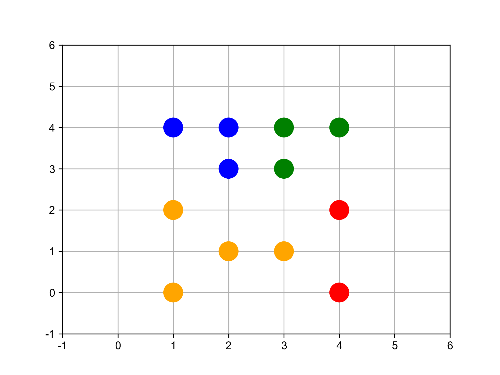
Figure 38: 分成四群
- 分兩群
- SciPy: scipy.cluster.hierarchy[一次分完]
1: import numpy as np 2: import matplotlib.pyplot as plt 3: import scipy.cluster.hierarchy as sch 4: 5: # randomly chosen dataset 6: X = np.array([[1, 2], [1, 4], [1, 0], [2, 1], [2, 3], [2, 4], 7: [3, 1], [3, 3], [3, 4], [4, 2], [4, 4], [4, 0]]) 8: y = np.array(['A', 'B', 'C', 'D', 'E', 'F', 'G', 'H', 'I', 'J', 'K', 'L']) 9: 10: dis=sch.linkage(X,metric='euclidean', method='ward') 11: #metric: 距離的計算方式 12: #method: 群與群之間的計算方式，”single”, “complete”, “average”, 13: # “weighted”, “centroid”, “median”, “ward” 14: 15: sch.dendrogram(dis, labels = y) 16: 17: plt.title('Hierarchical Clustering') 18: plt.xticks(rotation=30) 19: plt.savefig("images/hierarCluster-1.png", dpi=300) 20: #plt.show()
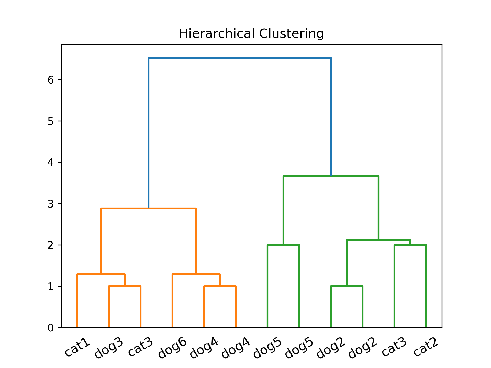
Figure 39: Hierarchical Clustering
- SciPy: scipy.cluster.hierarchy[逐步分群]
1: import numpy as np 2: import matplotlib.pyplot as plt 3: import scipy.cluster.hierarchy as sch 4: 5: # randomly chosen dataset 6: X = np.array([[1, 2], [1, 4], [1, 0], [2, 1], [2, 3], [2, 4], 7: [3, 1], [3, 3], [3, 4], [4, 2], [4, 4], [4, 0]]) 8: y = np.array(['A', 'B', 'C', 'D', 'E', 'F', 'G', 'H', 'I', 'J', 'K', 'L']) 9: 10: #metric: 距離的計算方式 11: #method: 群與群之間的計算方式，”single”, “complete”, “average”, “weighted”, “centroid”, “median”, “ward” 12: 13: plt.cla() 14: # Setting the truncate_mode to 'lastp' to see incremental clustering 15: plt.figure(figsize=(10, 20)) 16: for i in range(2, len(y) + 1): 17: plt.subplot( 6, 2, i - 1) 18: labels = y[:i] # Adjusting labels for each step 19: x_step = X[:i] 20: dis=sch.linkage(x_step, metric='euclidean', method='ward') 21: sch.dendrogram(dis, labels=labels, truncate_mode='lastp', p=i) 22: plt.title(f'Step {i}') 23: 24: plt.suptitle('Hierarchical Clustering Steps') 25: plt.tight_layout(rect=[0, 0.03, 1, 0.95]) 26: 27: plt.title('Hierarchical Clustering') 28: plt.xticks(rotation=30) 29: plt.savefig("images/hierarCluster-2.png", dpi=300) 30: #plt.show()
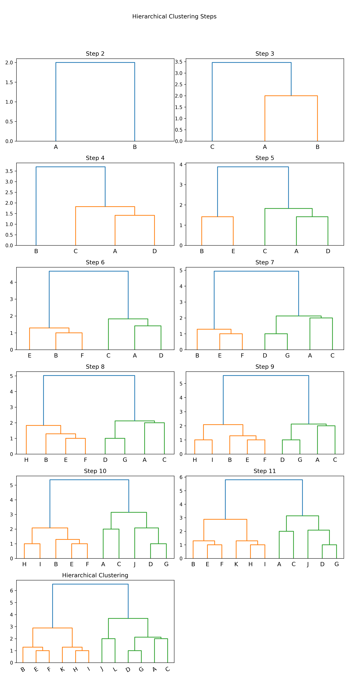
Figure 40: Hierarchical Clustering 逐步分群
- 利用距離決定群數，或直接給定群數
建構好聚落樹狀圖後，我們可以依照距離的切割來進行分類，也可以直接給定想要分類的群數，讓系統自動切割到相對應的距離。
- 距離切割 所給出的樹狀圖，y軸代表距離，我們可以用特徵之間的距離進行分群的切割。
1: max_dis=5 2: clusters=sch.fcluster(dis,max_dis,criterion='distance') 3: import matplotlib.pyplot as plt 4: plt.figure() 5: plt.scatter(X[:,0], X[:,1], c=clusters, cmap=plt.cm.Set1) 6: plt.savefig("images/clusterScatter.png", dpi=300)
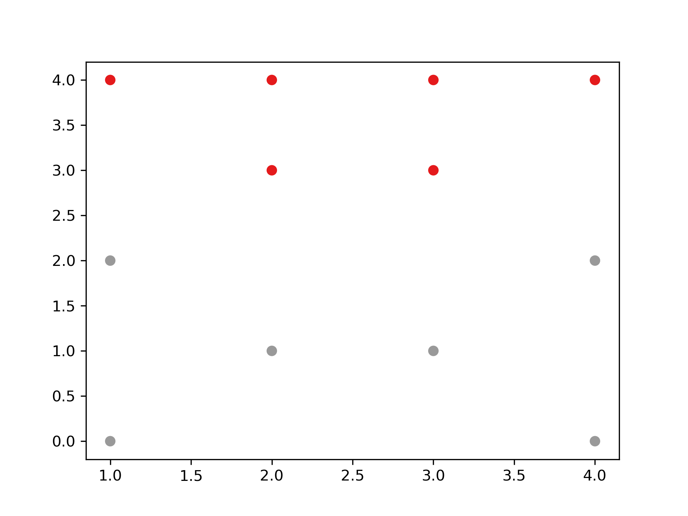
Figure 41: 依距離切割分群結果
- 直接給定群數 同時，我們也可以像sklearn一樣，直接給定我們所想要分出的群數。
1: k=4 2: clusters=sch.fcluster(dis,k,criterion='maxclust') 3: 4: import matplotlib.pyplot as plt 5: plt.figure() 6: plt.scatter(X[:,0], X[:,1], c=clusters, cmap=plt.cm.Set1) 7: plt.savefig("images/clusterScatter-1.png", dpi=300)
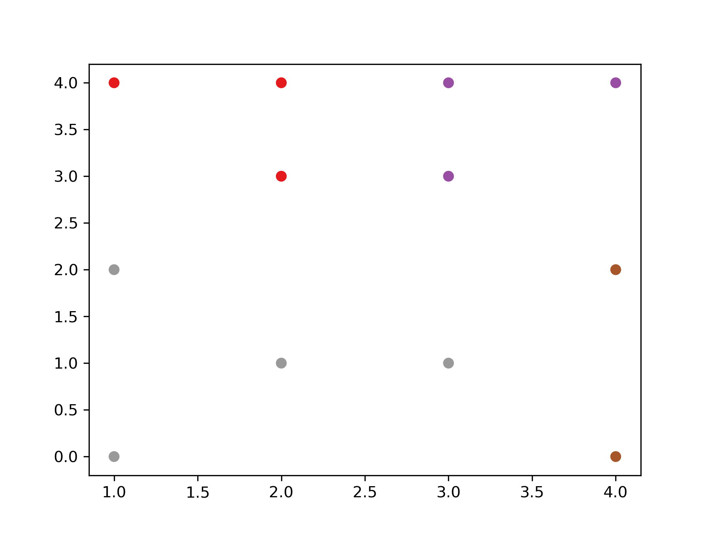
Figure 42: 直接給定群數分群結果
- scikit-learn: Agglomerative Clustering
- 如何評估最佳分群數:K
3.2. [課堂任務]聚合式階層分群 TNFSH
- 資料
在此給定資料並以數值化座標平面表示，其中包含A、B、C、D、E、F、G及H共8個點。假設B與C點合併為G1；G與H點合併為G2，而G2加入F點後形成G3。 每個資料點有兩個特徵值(如圖43)：
- x = np.array([1,2,3,2,5,5,6,7])
- y = np.array([4,2,2,6,5,0,1,2])
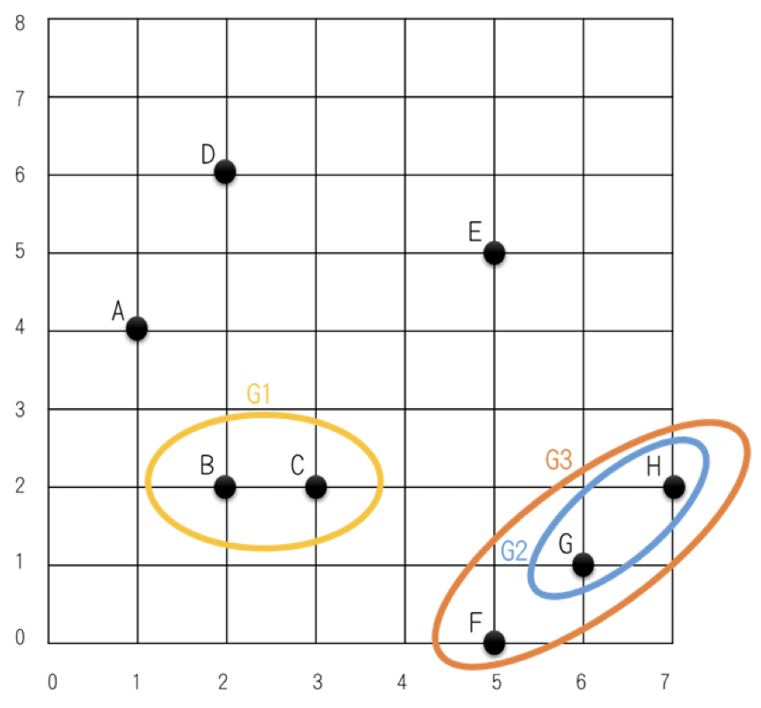
Figure 43: 資料分佈圖
- 任務1
請利用「單一連結」的群間距離計算方式完成聚合式階層式分群。
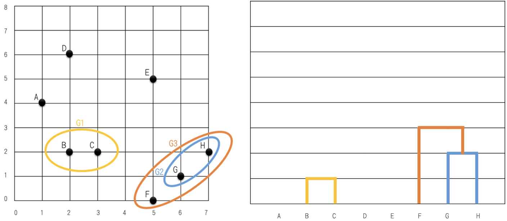
- 任務2
請利用「完整連結」的群間距離計算方式完成聚合式階層式分群。
- 任務3
請利用「平均連結」的群間距離計算方式完成聚合式階層式分群。
- 任務4
請以「單一連結」完成之聚合式階層式分群結果，寫出各種不同分群數量時，各群所包含的資料內容。
/2024-02-14_16-09-10_2024-02-14_16-09-01.png)
/2024-02-14_16-25-47_2024-02-14_16-25-40.png)
3.3. TNFSH作業: 聚合式分群作業 TNFSH
電子商務網站黃色鬼屋近日收集了200位VIP客戶資料，想將這些客戶依其同質性進行分類。
- 資料
Figure 44: 黃色鬼屋VIP資料
- 資料集URL: https://raw.githubusercontent.com/letranger/AI/gh-pages/Downloads/schopaholic.csv
- CID: 客戶編號
- Gd: 性別(Male/Female)
- Age: 年齡
- Income: 月收入(單位為萬元)
- ShopSco: 這是黃色鬼屋自訂的敗家分數，範圍由0~100
- 任務
畫出200位VIP客戶的性別、年齡、月收入、敗家分數的分佈狀況，例如:
- 利用聚合式分群的模型幫黃色鬼屋完成以下工作
將階層圖畫出來，例如:
輸出分成5群的結果，例如:
第1群客戶ID: 127 129 131 135 ... 第2群客戶ID: 28 44 46 47 48 ... 第3群客戶ID: 124 126 128 130 ... 第4群客戶ID: 2 4 6 8 10 12 14 ... 第5群客戶ID: 1 3 5 7 9 11 13 ...

4. DBSCAN
DBSCAN（密度式分群）會將「彼此靠得很近」的點群組在一起，其中「靠近」是指在某個指定距離範圍內，必須存在最少數量的點。如果一個點同時位於多個群的距離範圍內，則它會被歸類到其中密度最高的群。任何不在任何群的距離範圍內的點，則會被標記為離群值（outlier）。
在 K-means 和階層式分群中，所有資料點都必須被分到某個群內，這使得離群值常被處理得很差。而 DBSCAN 則可以明確地標記離群值，避免必須強行將它們納入群中，這是一項很強大的特性。與其他分群演算法相比，DBSCAN 對資料中的離群值不容易受到扭曲影響。
此外，像階層式分群一樣 —— 不同於 K-means —— DBSCAN 不需要事先指定群的數量。
4.1. K-Means 的罩門
K-Means 有個致命弱點：它假設每個群都是「圓球形」的，而且你得事先告訴它要分幾群。如果資料長得像兩個彎月、一條蛇繞著一顆球，K-Means 就會崩潰——它會硬把彎月切成兩半，然後跟你說「分好了喔」。
DBSCAN（Density-Based Spatial Clustering of Applications with Noise）不吃這套。它不管形狀，只看「密度」——哪裡人擠人就是一群，旁邊沒人的就是離群值（噪音）。
4.2. DBSCAN 的核心概念
想像你在學校操場上俯瞰，要把底下的人分組：
- *eps（鄰域半徑）*：你規定「手牽手的距離」，例如 1 公尺以內算「靠在一起」
- *min_samples（最少人數）*：你規定至少要幾個人靠在一起才算「一群人」，例如 3 人
DBSCAN 會幫每個點做判斷：
- *核心點（Core Point）*：以它為圓心、eps 為半徑的範圍內，至少有 min_samples 個點 → 它是群的種子
- *邊界點（Border Point）*：自己不是核心點，但落在某個核心點的半徑內 → 被拉進那個群
- *噪音點（Noise Point）*：不是核心點、也不在任何核心點附近 → 被標記為離群值（label = -1）
核心點之間如果彼此靠得夠近，就會像漣漪一樣擴散、連成同一個群。這就是為什麼 DBSCAN 能處理任意形狀的群集。
4.3. 與 K-Means 的差異
| 特性 | K-Means | DBSCAN |
|---|---|---|
| 需要指定群數？ | 需要（K 值） | 不需要，自動決定 |
| 能處理任意形狀？ | 不行，只適合球形 | 可以，看密度不看形狀 |
| 能偵測離群值？ | 不行，所有點都會被分群 | 可以，噪音點標為 -1 |
| 需要調的參數 | K | eps、min_samples |
4.4. DBSCAN 實作：月亮形資料
K-Means 在非球形資料上會翻車，來看 DBSCAN 怎麼處理：
1: import numpy as np 2: import matplotlib.pyplot as plt 3: from sklearn.datasets import make_moons 4: from sklearn.cluster import KMeans, DBSCAN 5: 6: # 產生兩個彎月形的資料 7: X, y = make_moons(n_samples=300, noise=0.05, random_state=42) 8: 9: fig, axes = plt.subplots(1, 3, figsize=(15, 4)) 10: 11: # 原始資料 12: axes[0].scatter(X[:, 0], X[:, 1], s=30, color='gray') 13: axes[0].set_title('Original Data') 14: 15: # K-Means（硬分兩群） 16: kmeans = KMeans(n_clusters=2, random_state=42) 17: km_labels = kmeans.fit_predict(X) 18: axes[1].scatter(X[:, 0], X[:, 1], c=km_labels, cmap='Set1', s=30) 19: axes[1].set_title('K-Means (K=2)') 20: 21: # DBSCAN 22: db = DBSCAN(eps=0.2, min_samples=5) 23: db_labels = db.fit_predict(X) 24: axes[2].scatter(X[:, 0], X[:, 1], c=db_labels, cmap='Set1', s=30) 25: axes[2].set_title('DBSCAN (eps=0.2, min_samples=5)') 26: 27: plt.tight_layout() 28: plt.savefig('images/dbscan-vs-kmeans.png', dpi=300) 29: print(f'K-Means 分群標籤: {np.unique(km_labels)}') 30: print(f'DBSCAN 分群標籤: {np.unique(db_labels)}') 31: print(f'DBSCAN 噪音點數量: {np.sum(db_labels == -1)}')
Figure 46: K-Means vs DBSCAN：彎月形資料
可以看到 K-Means 把兩個月亮各砍一半、混在一起分，而 DBSCAN 靠密度正確地把兩個月亮分開了。
4.5. eps 的影響
eps 太小，大家都變噪音（太嚴格，沒人能交朋友）；eps 太大，全部變同一群（太寬鬆，所有人都是好朋友）。
1: fig, axes = plt.subplots(1, 3, figsize=(15, 4)) 2: for i, e in enumerate([0.05, 0.2, 0.5]): 3: db = DBSCAN(eps=e, min_samples=5) 4: labels = db.fit_predict(X) 5: n_clusters = len(set(labels)) - (1 if -1 in labels else 0) 6: n_noise = list(labels).count(-1) 7: axes[i].scatter(X[:, 0], X[:, 1], c=labels, cmap='Set1', s=30) 8: axes[i].set_title(f'eps={e}, clusters={n_clusters}, noise={n_noise}') 9: plt.tight_layout() 10: plt.savefig('images/dbscan-eps.png', dpi=300)

Figure 47: eps 值對 DBSCAN 分群結果的影響
5. 降維
降維(dimensionality reduction)的核心思想：在不損失太多資訊的前提下，把資料從高維度壓縮到低維度。
5.1. 生活中的降維：拍照
你站在校門口看一棟 3D 的教學大樓——它有高度、寬度、深度三個維度。但你拿手機拍了一張照片，3D 的建築物瞬間變成 2D 的平面圖。這就是降維：你從三維壓到二維，雖然失去了深度資訊（你分不出前後棟的距離），但建築物的外觀、窗戶數量、招牌文字這些重要資訊幾乎都保留下來了。
照片其實就是一次投影——把 3D 空間「投影」到 2D 平面上。
5.2. 生活中的降維：學期成績
再想一個更切身的例子。你一學期下來，每一科都有這些分數：
- 第一次段考、第二次段考、第三次段考
- 平時成績（出席、作業、小考、課堂表現…）
- 學習態度分數
每一科有至少 5~6 個維度的資料。但到了學期末，這些全部被壓縮成一個數字：*學期成績*。
這個壓縮過程其實就是降維：
- 原始資料：5~6 個維度（段考1、段考2、段考3、平時、態度…）
- 降維後：1 個維度（學期成績）
- 壓縮方式：加權平均（例如段考各佔 30%、平時佔 10%）
你會損失一些資訊——兩個學期成績都是 75 分的同學，一個可能是三次段考都穩定考 75，另一個可能是第一次 50、第二次 75、第三次 100（進步型選手），但學期成績看不出這個差異。不過對學校來說，一個數字就夠做大部分的決策了（排名、升學、分班）。
這就是降維的本質：*犧牲一點細節，換取大幅的簡化*。
5.3. 為什麼機器學習需要降維
當資料的維度太高時（例如一張 28×28 的圖片就有 784 個像素值＝784 維），會遇到：
- 計算量爆炸：維度每多一個，計算時間可能翻倍
- 維度詛咒：維度越高，資料點之間的距離越來越像，分群和分類都會變困難3
- 雜訊放大：很多維度其實只是雜訊，留著反而干擾模型
降維就是幫機器做「學期成績計算」——從幾百個原始特徵中，找出最能代表資料本質的少數幾個「綜合指標」。
降維的主要做法：
5.4. 以主成份分析(PCA)對非監督式數據壓縮
回到學期成績的例子：學校用「固定公式」算學期成績（段考各 30%、平時 10%），但這個公式對每一科都一樣，不管你是數學課還是體育課。PCA 做的事更聰明——它會根據資料本身的分佈，自動找出「最能保留資訊的壓縮方式」。
就像學校如果發現某一科的三次段考分數幾乎一模一樣（變異量很小），PCA 就會判斷「這三次段考基本上是同一個資訊，留一個代表就好」；反之，如果平時成績和段考分數差很大（變異量很大），PCA 就會認為「這兩個維度都很重要，都要保留」。
- 主成分分析 1
主成份分析（Principal Component Analysis, PCA）是一種非監督式線性變換技術，常用於特徵提取與降維。它的核心假設是：*資料中變異量最大的方向，就是最有資訊量的方向*。
以圖48為例，PCA 的目的在於找到一個投影軸（圖中紅色的線），讓投影後的資料變異量最大——就像拍照時選一個角度，讓照片裡的物體看起來最有立體感。
Figure 48: PCA-1 [fn:31]
- 投影(projection)
假設有一個點藍色的點對原點的向量為\(\vec{x_i}\)，有一個軸為 v，他的投影(正交為虛線和藍色線為 90 度)向量為紅色那條線，紅色線和黑色線的夾角為\(\theta\)，\(\vec{x_i}\)投影長度為藍色線，其長度公式為\(\left\|{x_i}\right\|cos\theta\)。
Figure 49: PCA-2 [fn:31]
假設有一組資料六個點(\(x_1, x_2, x_3, x_4, x_5, x_6\))，有兩個投影向量\(\vec{v}\)和\(\vec{v'}\)(如圖50)，投影下來後，資料在\(\vec{v'}\)上的變異量比\(v\)上的變異量小。
Figure 50: PCA-3 [fn:31]
從圖51也可以看出這些資料在\(v\)向量資料投影后有較大的變異量(較之投影於\(\vec{v'}\))。
Figure 51: PCA-4 [fn:31]
- 變異量的計算
典型的變異數公式如下： \(\sigma^2 = \frac{1}{N}\sum\limits_{i=1}^N (X -\mu)^2\)
若要計算前述所有資料點(\(x_1, x_2, x_3, x_4, x_5, x_6\))在\(v\)上的投影\(v^Tx_1, v^Tx_2, v^Tx_3, v^Tx_4, v^Tx_5, v^Tx_6\) ，則其變異數公式為 \(\sigma^2 = \frac{1}{N}\sum\limits_{i=1}^N (v^Tx_i -\mu)^2\)
又因 PCA 之前提假設是將資料 shift 到 0(即，變異數的平均數為 0)以簡化運算，其公式會變為 \(\sigma^2 = \frac{1}{N}\sum\limits_{i=1}^N (v^Tx_i -\mu)^2 = \frac{1}{N}\sum\limits_{i=1}^N (v^Tx_i - 0)^2 = \frac{1}{N}\sum\limits_{i=1}^N (v^Tx_i)^2\)
而機器學習處理的資料點通常為多變量，故上述式子會以矩陣方式呈現
\(\Sigma = \frac{1}{N}\sum\limits_{i=1}^N (v^Tx_i)(v^Tx_i)^T = \frac{1}{N}\sum\limits_{i=1}^N (v^Tx_iv^Tx_iv) = v^T(\frac{1}{N}\sum\limits_{i=1}^Nx_iX_i^T)v = v^TCv\)
其中 C 為共變異數矩陣(covariance matrix)
\(C=\frac{1}{n}\sum\limits_{i=1}^nx_ix_i^T,\cdots x_i = \begin{bmatrix} x_1^{(1)} \\ x_2^{(2)} \\ \vdots \\ x_i^{(d)} \\ \end{bmatrix}\)
主成份分析的目的則是在找出一個投影向量讓投影後的資料變異量最大化（最佳化問題）：
\(v = \mathop{\arg\max}\limits_{x \in \mathcal{R}^d,\left\|v\right\|=1} {v^TCv}\)
進一步轉成 Lagrange、透過偏微分求解，其實就是解 C 的特徵值(eigenvalue, \(\lambda\))和特徵向量(eigenvector, \(v\))。
- 投影(projection)
- 主成份分析 2
以下左圖的二維資料為例，經由 PCA 可以萃取出兩個主成份（投影軸，下圖右的兩條垂直的紅線，較長的紅線軸為變異量較大的主成份）。此範例中最大主成份的變異量為 13.26，第二大主成份的變異量為 1.23。
用學期成績來比喻：如果把全班同學的「段考平均」和「平時成績」畫在二維散佈圖上，PCA 會找到一條最能區分同學差異的軸（主成份1），以及一條垂直於它的次要軸（主成份2）。如果主成份1 就能解釋 91% 的差異，那另一個維度幾乎可以丟掉——就像你只看段考平均就能大致判斷一個學生的程度。
Figure 52: PCA-5 [fn:31]
PCA 投影完的資料為下圖，從下圖可知，PC1 的變異足以表示此筆資料資訊。
Figure 53: PCA-6 [fn:31]
此做法可以有效的減少維度數，但整體變異量並沒有減少太多。此例從兩個維度壓到一個，變異量卻保留了 13.26/(13.26+1.23)= 91.51%。就像學校把六個分數壓成一個學期成績，雖然看不到每次段考的細節，但 91% 的「學生差異」資訊都還在。
- 主成份分析的主要步驟
- 標準化數據集
- 建立共變數矩陣
- 從共變數矩陣分解出特徵值與特徵向量
- 以遞減方式對特徵值進行排序，以便對特徵向量排名
1: import pandas as pd 2: from sklearn.model_selection import train_test_split 3: from sklearn.preprocessing import StandardScaler 4: import numpy as np 5: import matplotlib.pyplot as plt 6: from sklearn.decomposition import PCA 7: 8: # ## Extracting the principal components step-by-step 9: 10: df_wine = pd.read_csv('https://archive.ics.uci.edu/ml/' 11: 'machine-learning-databases/wine/wine.data', 12: header=None) 13: 14: df_wine.columns = ['Class label', 'Alcohol', 'Malic acid', 'Ash', 15: 'Alcalinity of ash', 'Magnesium', 'Total phenols', 16: 'Flavanoids', 'Nonflavanoid phenols', 'Proanthocyanins', 17: 'Color intensity', 'Hue', 18: 'OD280/OD315 of diluted wines', 'Proline'] 19: 20: print(df_wine.head()) 21: 22: # Splitting the data into 70% training and 30% test subsets. 23: 24: X, y = df_wine.iloc[:, 1:].values, df_wine.iloc[:, 0].values 25: 26: X_train, X_test, y_train, y_test = train_test_split(X, y, 27: test_size=0.3, 28: stratify=y, random_state=0) 29: 30: # 1. Standardizing the data. 31: sc = StandardScaler() 32: X_train_std = sc.fit_transform(X_train) 33: X_test_std = sc.transform(X_test) 34: 35: # 2. Eigendecomposition of the covariance matrix. 36: cov_mat = np.cov(X_train_std.T) 37: eigen_vals, eigen_vecs = np.linalg.eig(cov_mat) 38: 39: print('\nEigenvalues \n%s' % eigen_vals) 40: 41: # ## Total and explained variance 42: 43: tot = sum(eigen_vals) 44: var_exp = [(i / tot) for i in sorted(eigen_vals, reverse=True)] 45: cum_var_exp = np.cumsum(var_exp) 46: 47: plt.bar(range(1, 14), var_exp, alpha=0.5, align='center', 48: label='individual explained variance') 49: plt.step(range(1, 14), cum_var_exp, where='mid', 50: label='cumulative explained variance') 51: plt.ylabel('Explained variance ratio') 52: plt.xlabel('Principal component index') 53: plt.legend(loc='best') 54: plt.tight_layout() 55: plt.savefig('05_02.png', dpi=300) 56: #plt.show() 57:
Class label Alcohol ... OD280/OD315 of diluted wines Proline 0 1 14.23 ... 3.92 1065 1 1 13.20 ... 3.40 1050 2 1 13.16 ... 3.17 1185 3 1 14.37 ... 3.45 1480 4 1 13.24 ... 2.93 735 [5 rows x 14 columns] Eigenvalues [4.84274532 2.41602459 1.54845825 0.96120438 0.84166161 0.6620634 0.51828472 0.34650377 0.3131368 0.10754642 0.21357215 0.15362835 0.1808613 ]
Figure 54: Principal component index
雖然上圖的「解釋變異數」圖有點類似隨機森林評估特徵值重要性的結果，但二者最大的不同處在於 PCA 為一種非監督式方法，也就是說，關於類別標籤資訊是被忽略的。
- 特徵轉換
在分解「共變數矩陣」成為「特徵對」後，接下來要將資料集轉換為新的「主成份」，其步驟如下：
- 選取\(k\)個最大特徵值所對應的 k 個特徵向量，其中\(k\)為新「特徵空間」的維數(\(k \le d\))。
- 用最前面的\(k\)個特徵向量建立「投影矩陣」(project matrix)\(W\)。
- 使用投影矩陣\(W\)，輸入值為\(d\)維數據集、輸出值為新的\(k\)維「特徵子空間」。
1: import pandas as pd 2: from sklearn.model_selection import train_test_split 3: from sklearn.preprocessing import StandardScaler 4: import numpy as np 5: import matplotlib.pyplot as plt 6: from sklearn.decomposition import PCA 7: 8: # ## Extracting the principal components step-by-step 9: 10: df_wine = pd.read_csv('https://archive.ics.uci.edu/ml/' 11: 'machine-learning-databases/wine/wine.data', 12: header=None) 13: 14: # df_wine.columns = ['Class label', 'Alcohol', 'Malic acid', 'Ash', 15: # 'Alcalinity of ash', 'Magnesium', 'Total phenols', 16: # 'Flavanoids', 'Nonflavanoid phenols', 'Proanthocyanins', 17: # 'Color intensity', 'Hue', 18: # 'OD280/OD315 of diluted wines', 'Proline'] 19: 20: # Splitting the data into 70% training and 30% test subsets. 21: X, y = df_wine.iloc[:, 1:].values, df_wine.iloc[:, 0].values 22: X_train, X_test, y_train, y_test = train_test_split(X, y, 23: test_size=0.3, 24: stratify=y, random_state=0) 25: # 1. Standardizing the data. 26: sc = StandardScaler() 27: X_train_std = sc.fit_transform(X_train) 28: X_test_std = sc.transform(X_test) 29: # 2. Eigendecomposition of the covariance matrix. 30: cov_mat = np.cov(X_train_std.T) 31: eigen_vals, eigen_vecs = np.linalg.eig(cov_mat) 32: # ## Total and explained variance 33: #tot = sum(eigen_vals) 34: #var_exp = [(i / tot) for i in sorted(eigen_vals, reverse=True)] 35: #cum_var_exp = np.cumsum(var_exp) 36: # ## Feature transformation 37: # Make a list of (eigenvalue, eigenvector) tuples 38: eigen_pairs = [(np.abs(eigen_vals[i]), eigen_vecs[:, i]) 39: for i in range(len(eigen_vals))] 40: # Sort the (eigenvalue, eigenvector) tuples from high to low 41: eigen_pairs.sort(key=lambda k: k[0], reverse=True) 42: w = np.hstack((eigen_pairs[0][1][:, np.newaxis], 43: eigen_pairs[1][1][:, np.newaxis])) 44: print('Matrix W:\n', w) 45: print(X_train_std[0].dot(w)) 46: X_train_pca = X_train_std.dot(w) 47: # plot 48: colors = ['r', 'b', 'g'] 49: markers = ['s', 'x', 'o'] 50: 51: for l, c, m in zip(np.unique(y_train), colors, markers): 52: plt.scatter(X_train_pca[y_train == l, 0], 53: X_train_pca[y_train == l, 1], 54: c=c, label=l, marker=m) 55: 56: plt.xlabel('PC 1') 57: plt.ylabel('PC 2') 58: plt.legend(loc='lower left') 59: plt.tight_layout() 60: plt.savefig('05_03.png', dpi=300) 61: #plt.show() 62:
Matrix W: [[-0.13724218 0.50303478] [ 0.24724326 0.16487119] [-0.02545159 0.24456476] [ 0.20694508 -0.11352904] [-0.15436582 0.28974518] [-0.39376952 0.05080104] [-0.41735106 -0.02287338] [ 0.30572896 0.09048885] [-0.30668347 0.00835233] [ 0.07554066 0.54977581] [-0.32613263 -0.20716433] [-0.36861022 -0.24902536] [-0.29669651 0.38022942]] [2.38299011 0.45458499]
使用上述程式碼產生的 13*2 維的投影矩陣可以轉換一個樣本\(x\)(以\(1 \times 13\)維的列向量表示)到 PCA 子空間(\(x'\))(前兩個主成份)：\(x' = xW\)(程式碼第45行)；同樣的，我們也可以將整個\(124 \times 13\)維的訓練數據集轉換到兩個主成份(\(124 \times 2\)維)(程式第46行)，最後，將轉換過的\(124 \times 2\)維矩陣以二維散點圖表示：
Figure 55: 05_03
由圖55中可看出，與第二個主成份(y 軸)相比，數據沿著第一主成份(x 軸)的分散程度更嚴重，而由此圖也可判斷，該數據應可以一個「線性分類器」進行有效分類。
- 以 Scikit-learn 進行主成份分析
1: from matplotlib.colors import ListedColormap 2: import pandas as pd 3: from sklearn.model_selection import train_test_split 4: from sklearn.preprocessing import StandardScaler 5: import numpy as np 6: import matplotlib.pyplot as plt 7: from sklearn.decomposition import PCA 8: from sklearn.linear_model import LogisticRegression 9: 10: # ## Extracting the principal components step-by-step 11: 12: df_wine = pd.read_csv('https://archive.ics.uci.edu/ml/' 13: 'machine-learning-databases/wine/wine.data', 14: header=None) 15: 16: # df_wine.columns = ['Class label', 'Alcohol', 'Malic acid', 'Ash', 17: # 'Alcalinity of ash', 'Magnesium', 'Total phenols', 18: # 'Flavanoids', 'Nonflavanoid phenols', 'Proanthocyanins', 19: # 'Color intensity', 'Hue', 20: # 'OD280/OD315 of diluted wines', 'Proline'] 21: 22: # Splitting the data into 70% training and 30% test subsets. 23: X, y = df_wine.iloc[:, 1:].values, df_wine.iloc[:, 0].values 24: X_train, X_test, y_train, y_test = train_test_split(X, y, 25: test_size=0.3, 26: stratify=y, random_state=0) 27: # 1. Standardizing the data. 28: sc = StandardScaler() 29: X_train_std = sc.fit_transform(X_train) 30: X_test_std = sc.transform(X_test) 31: 32: def plot_decision_regions(X, y, classifier, resolution=0.02): 33: # setup marker generator and color map 34: markers = ('s', 'x', 'o', '^', 'v') 35: colors = ('red', 'blue', 'lightgreen', 'gray', 'cyan') 36: cmap = ListedColormap(colors[:len(np.unique(y))]) 37: 38: # plot the decision surface 39: x1_min, x1_max = X[:, 0].min() - 1, X[:, 0].max() + 1 40: x2_min, x2_max = X[:, 1].min() - 1, X[:, 1].max() + 1 41: xx1, xx2 = np.meshgrid(np.arange(x1_min, x1_max, resolution), 42: np.arange(x2_min, x2_max, resolution)) 43: Z = classifier.predict(np.array([xx1.ravel(), xx2.ravel()]).T) 44: Z = Z.reshape(xx1.shape) 45: plt.contourf(xx1, xx2, Z, alpha=0.4, cmap=cmap) 46: plt.xlim(xx1.min(), xx1.max()) 47: plt.ylim(xx2.min(), xx2.max()) 48: 49: # plot class samples 50: for idx, cl in enumerate(np.unique(y)): 51: plt.scatter(x=X[y == cl, 0], 52: y=X[y == cl, 1], 53: alpha=0.6, 54: c=cmap(idx), 55: edgecolor='black', 56: marker=markers[idx], 57: label=cl) 58: 59: # Training logistic regression classifier using the first 2 principal components. 60: pca = PCA(n_components=2) 61: X_train_pca = pca.fit_transform(X_train_std) 62: X_test_pca = pca.transform(X_test_std) 63: 64: lr = LogisticRegression() 65: lr = lr.fit(X_train_pca, y_train) 66: 67: plot_decision_regions(X_train_pca, y_train, classifier=lr) 68: plt.xlabel('PC 1') 69: plt.ylabel('PC 2') 70: plt.legend(loc='lower left') 71: plt.tight_layout() 72: plt.savefig('05_04.png', dpi=300) 73: #plt.show() 74: plot_decision_regions(X_test_pca, y_test, classifier=lr) 75: plt.xlabel('PC 1') 76: plt.ylabel('PC 2') 77: plt.legend(loc='lower left') 78: plt.tight_layout() 79: plt.savefig('05_05.png', dpi=300) 80: #plt.show()
PCA 類別是 scikit-learn 中許多轉換類別之一，首先使用訓練數據集來 fit 模型並轉換數據集(程式第61行)，最後以 Logistic 迴歸對數據進行分類。圖56為訓練集資料的分類結果，圖57測為測試資料集分類結果，可以看出二者差異不大。
Figure 56: PCA 訓練數據
Figure 57: PCA 測試數據
5.5. t-SNE：高維資料的照妖鏡
- 為什麼需要 t-SNE
前面學了 PCA，它把資料「投影」到變異量最大的方向上，就像把 3D 物體的影子照在牆上。PCA 很快、很數學，但它只會做「線性投影」——如果資料的結構是彎的、捲的、纏在一起的，PCA 就會把這些結構壓扁、混在一起，你看到的影子根本分不出誰是誰。
t-SNE（t-distributed Stochastic Neighbor Embedding）就是來解決這個問題的。
- 生活化比喻：社群網路搬家
想像你的班上有 40 個人，每個人都有很多特質（成績、興趣、社團、遊戲帳號、IG 追蹤…），這些特質構成了一個「高維空間」——你沒辦法在一張紙上同時畫出所有特質。
現在校長說：「把全班的人際關係畫在一張 A4 紙上。」
你會怎麼畫？
- 好朋友畫得近一點（常一起吃飯、一起打球的人靠在一起）
- 不太熟的人畫遠一點
- 不同小圈圈之間保持距離
這就是 t-SNE 在做的事：
- 先在高維空間計算「每兩個人有多熟」（用機率表示親密度）
- 然後在 2D 紙上找到一個擺法，讓 2D 的親密度盡量跟高維的親密度一致
- 好朋友在紙上也要靠近，陌生人在紙上也要分開
- t-SNE 的特性
- 擅長「保留局部結構」：同一群的點會緊密聚在一起
- 不同群之間的絕對距離不重要（兩群之間的距離不代表它們「有多不同」）
- 每次跑的結果可能略有不同（因為有隨機性）
- 速度比 PCA 慢很多，通常搭配 PCA 先降到 50 維左右再跑 t-SNE
- 實作：用 t-SNE 看 MNIST 手寫數字
MNIST 每張圖片是 28x28 = 784 個像素（784 維），人眼根本無法想像 784 維的空間。用 t-SNE 把它壓到 2D，看看不同數字會不會自己聚在一起：
1: import numpy as np 2: import matplotlib.pyplot as plt 3: from sklearn.datasets import fetch_openml 4: from sklearn.manifold import TSNE 5: from sklearn.decomposition import PCA 6: 7: # 載入 MNIST（取前 2000 筆加速） 8: mnist = fetch_openml('mnist_784', version=1, as_frame=False, parser='auto') 9: X, y = mnist.data[:2000], mnist.target[:2000].astype(int) 10: 11: # 先用 PCA 降到 50 維（加速 t-SNE） 12: pca = PCA(n_components=50, random_state=42) 13: X_pca = pca.fit_transform(X) 14: 15: # t-SNE 降到 2 維 16: tsne = TSNE(n_components=2, perplexity=30, random_state=42) 17: X_tsne = tsne.fit_transform(X_pca) 18: 19: # 畫圖 20: plt.figure(figsize=(10, 8)) 21: scatter = plt.scatter(X_tsne[:, 0], X_tsne[:, 1], 22: c=y, cmap='tab10', s=10, alpha=0.7) 23: plt.colorbar(scatter, label='Digit') 24: plt.title('t-SNE visualization of MNIST (2000 samples)') 25: plt.xlabel('t-SNE 1') 26: plt.ylabel('t-SNE 2') 27: plt.savefig('images/tsne-mnist-visible.png', dpi=300) 28: print('Done! 不同數字自動聚成不同群了。')
Figure 58: t-SNE 將 784 維的 MNIST 壓縮至 2D
從圖中可以看到，雖然我們完全沒有告訴 t-SNE「哪張圖是幾」（非監督式），但相同數字的圖片自動聚在一起了。這就是 t-SNE 的威力——它能把人眼看不到的高維結構，變成你看得懂的 2D 地圖。
- PCA vs t-SNE 比較
特性 PCA t-SNE 投影方式 線性 非線性 速度 快 慢（資料量大時明顯） 保留什麼 全域變異量 局部鄰近關係 適合用途 降維加速、初步觀察 高維資料視覺化 結果是否固定 固定 每次可能略有不同 可以反轉回原空間 可以 不行 實務上常見的做法是：先用 PCA 粗降到 50 維 → 再用 t-SNE 細降到 2D 畫圖。
5.6. 補充：利用線性判別分析(LDA)做監督式數據壓縮
注意：LDA 是 監督式 降維方法（需要標籤），放在這裡是為了跟 PCA 做對比。
LDA 的全稱是 Linear Discriminant Analysis（線性判別分析），是一種 supervised learning。因為是由 Fisher 在 1936 年提出的，所以也叫 Fisher’s Linear Discriminant。「線性判別分析」(linear discriminant analysis, LDA)為一種用來做「特徵提取」的技術，藉由降維來處理「維數災難」，可提高非正規化模型的計算效率。PCA 在於找出一個在數據集中最大化變異數的正交成分軸； 而 LDA 則是要找出可以最佳化類別分離的特徵子空間。
從主觀的理解上，主成分分析到底是什麼？它其實是對數據在高維空間下的一個投影轉換，通過一定的投影規則將原來從一個角度看到的多個維度映射成較少的維度。到底什麼是映射，下面的圖就可以很好地解釋這個問題——正常角度看是兩個半橢圓形分佈的數據集，但經過旋轉（映射）之後是兩條線性分佈數據集。4
| 1 | 2 | 3 | 4 |
| 5 | 6 | 7 | 8 |
LDA 與 PCA 都是常用的降維方法，二者的區別在於4：
- 出發思想不同。PCA 主要是從特徵的協方差角度，去找到比較好的投影方式，即選擇樣本點投影具有最大方差的方向（ 在信號處理中認為信號具有較大的方差，噪聲有較小的方差，信噪比就是信號與噪聲的方差比，越大越好。）；而 LDA 則更多的是考慮了分類標籤信息，尋求投影后不同類別之間數據點距離更大化以及同一類別數據點距離最小化，即選擇分類性能最好的方向。
- 學習模式不同。PCA 屬於無監督式學習，因此大多場景下只作為數據處理過程的一部分，需要與其他算法結合使用，例如將 PCA 與分群、判別分析、回歸分析等組合使用；LDA 是一種監督式學習方法，本身除了可以降維外，還可以進行預測應用，因此既可以組合其他模型一起使用，也可以獨立使用。
- 降維後可用維度數量不同。LDA 降維後最多可生成 C-1 維子空間（分類標籤數-1），因此 LDA 與原始維度 N 數量無關，只有數據標籤分類數量有關；而 PCA 最多有 n 維度可用，即最大可以選擇全部可用維度。
圖59左側是 PCA 的降維思想，它所作的只是將整組數據整體映射到最方便表示這組數據的坐標軸上，映射時沒有利用任何數據內部的分類信息。因此，雖然 PCA 後的數據在表示上更加方便（降低了維數並能最大限度的保持原有信息），但在分類上也許會變得更加困難；圖59右側是 LDA 的降維思想，可以看到 LDA 充分利用了數據的分類信息，將兩組數據映射到了另外一個坐標軸上，使得數據更易區分了（在低維上就可以區分，減少了運算量）。
Figure 59: PCA LDA 差異
線性判別分析 LDA 算法由於其簡單有效性在多個領域都得到了廣泛地應用，是目前機器學習、數據挖掘領域經典且熱門的一個算法；但是算法本身仍然存在一些侷限性：
- 當樣本數量遠小於樣本的特徵維數，樣本與樣本之間的距離變大使得距離度量失效，使 LDA 算法中的類內、類間離散度矩陣奇異，不能得到最優的投影方向，在人臉識別領域中表現得尤為突出
- LDA 不適合對非高斯分佈的樣本進行降維
- LDA 在樣本分類信息依賴方差而不是均值時，效果不好
- LDA 可能過度擬合數據
6. 課堂練習 TNFSH
6.1. 練習一：K-Means 分群實作
用 K-Means 對真實資料進行分群，看看非監督式學習到底能不能在「不知道答案」的情況下，把資料分對。
- 範例：用假資料暖身
先用
make_blobs生成 60 個點（3 群、每群 20 個），跑 K-Means 看看效果。假資料的好處是：答案我們自己知道，可以確認演算法有沒有搞砸。1: from sklearn.datasets import make_blobs 2: from sklearn.cluster import KMeans 3: import matplotlib.pyplot as plt 4: import numpy as np 5: 6: # 處理matplotlib中文字體亂碼問題 7: plt.rcParams['font.sans-serif'] = ['Arial Unicode MS'] # 步驟一（替換系統中的字型，這裡用的是Mac OSX系統） 8: plt.rcParams['axes.unicode_minus'] = False # 步驟二（解決座標軸負數的負號顯示問題） 9: 10: # 生成 60 個點，分 3 群 11: X, y_true = make_blobs(n_samples=60, centers=3, random_state=42) 12: 13: # K-Means 分群 14: km = KMeans(n_clusters=3, random_state=42, n_init=10) 15: labels = km.fit_predict(X) 16: 17: # 畫圖比較 18: fig, axes = plt.subplots(1, 2, figsize=(10, 4)) 19: axes[0].scatter(X[:, 0], X[:, 1], c=y_true, cmap='viridis') 20: axes[0].set_title('真實標籤（我們偷看的答案）') 21: axes[1].scatter(X[:, 0], X[:, 1], c=labels, cmap='viridis') 22: axes[1].set_title('K-Means 分群結果') 23: plt.tight_layout() 24: plt.savefig('images/kmeans-blobs-example.png', dpi=300) 25: 26: print(f"各群樣本數: {np.bincount(labels)}") 27: print(f"Inertia: {km.inertia_:.2f}")
各群樣本數: [20 20 20] Inertia: 105.26
Figure 60: K-Means 分群實作（假資料）
結果：假資料分得很開，K-Means 輕鬆完美分群。但真實資料可沒這麼好說話……
- 你的任務：挑戰 Iris 資料集
Iris（鳶尾花）有 150 筆資料、4 個特徵、3 個品種。請修改上面的程式碼：
- 把
make_blobs換成load_iris載入真實資料 - Iris 有 4 個特徵（花萼長/寬、花瓣長/寬），無法直接畫 2D 散佈圖。請用
PCA(n_components=2)把 4 維降成 2 維再畫圖 - 畫兩張子圖：左邊是「真實標籤」，右邊是「K-Means 分群結果」
- 印出各群的樣本數和 Inertia
提示：
from sklearn.datasets import load_iris from sklearn.decomposition import PCA
iris = load_iris() X = iris.data # 150×4 的特徵矩陣 y_true = iris.target # 真實標籤 (0, 1, 2)
pca = PCA(n_components=2) X_2d = pca.fit_transform(X)
- 把
- 預期正確答案
各群樣本數: [50 62 38] Inertia: 78.85
Figure 61: K-Means 分群實作（Iris 資料集）
觀察兩張散佈圖：你會發現 Setosa（其中一個品種）被完美分出來，但 Versicolor 和 Virginica 的邊界就有點曖昧了——這正是非監督式學習的真實面貌：沒有標準答案可以參考，只能靠資料本身的結構說話。
6.2. 練習二：PCA 降維與解釋變異量
PCA（主成分分析）能把高維資料壓縮到低維度，同時盡量保留資訊。但要保留多少維度才夠？壓太多會不會把重要資訊壓掉？
- 範例：Iris 的 PCA（4 維 → 2 維）
Iris 只有 4 個特徵，用 PCA 降到 2 維，看看保留了多少資訊：
1: from sklearn.datasets import load_iris 2: from sklearn.preprocessing import StandardScaler 3: from sklearn.decomposition import PCA 4: import matplotlib.pyplot as plt 5: import numpy as np 6: 7: iris = load_iris() 8: X = iris.data 9: y = iris.target 10: 11: # 標準化（讓各特徵的量尺一致，不然數值大的特徵會霸佔主成分） 12: scaler = StandardScaler() 13: X_scaled = scaler.fit_transform(X) 14: 15: # PCA 保留全部主成分 16: pca = PCA() 17: pca.fit(X_scaled) 18: 19: explained = pca.explained_variance_ratio_ 20: cumulative = np.cumsum(explained) 21: 22: print("各主成分的解釋變異比例:") 23: for i, (e, c) in enumerate(zip(explained, cumulative)): 24: print(f" PC{i+1}: {e:.1%} (累積: {c:.1%})") 25: 26: # 處理matplotlib中文字體亂碼問題 27: plt.rcParams['font.sans-serif'] = ['Arial Unicode MS'] # 步驟一（替換系統中的字型，這裡用的是Mac OSX系統） 28: plt.rcParams['axes.unicode_minus'] = False # 步驟二（解決座標軸負數的負號顯示問題） 29: 30: # Scree Plot 31: plt.figure(figsize=(6, 4)) 32: plt.bar(range(1, len(explained)+1), explained, label='個別') 33: plt.plot(range(1, len(cumulative)+1), cumulative, 'ro-', label='累積') 34: plt.axhline(y=0.9, color='gray', linestyle='--', label='90% 門檻') 35: plt.xlabel('主成分') 36: plt.ylabel('解釋變異比例') 37: plt.title('Iris - Scree Plot') 38: plt.legend() 39: plt.savefig('images/pca-iris-example.png', dpi=300) 40: 41: print(f"\n結論：前 2 個主成分就保留了 {cumulative[1]:.1%} 的資訊，降維效果很好")
Figure 62: Iris 的 PCA 降維與解釋變異量
各主成分的解釋變異比例: PC1: 73.0% (累積: 73.0%) PC2: 22.9% (累積: 95.8%) PC3: 3.7% (累積: 99.5%) PC4: 0.5% (累積: 100.0%) 結論：前 2 個主成分就保留了 95.8% 的資訊，降維效果很好
4 個特徵只要 2 個主成分就保留了大部分資訊——這就是降維的威力。
- 你的任務：挑戰 Wine 資料集
Wine 有 13 個特徵（酒精、蘋果酸、灰分……各種化學成分），比 Iris 複雜得多。請修改上面的程式碼：
- 把
load_iris換成load_wine - 一樣做標準化 → PCA → 印出各主成分的解釋變異比例
- 找出至少要保留幾個主成分才能達到 90% 的累積解釋變異量
- 用前 2 個主成分畫散佈圖（三類 Wine 用不同顏色），觀察分離程度
提示：
from sklearn.datasets import load_wine wine = load_wine() X = wine.data # 178×13 y = wine.target # 0, 1, 2
- 把
- 預期正確答案
原始特徵數: 13 保留 90% 變異量需要: 8 個主成分 PC1 解釋變異: 36.2% PC2 解釋變異: 19.2% 前 2 主成分合計: 55.4%
你會發現 13 個特徵要用 8 個主成分才能保留 90% 資訊——比 Iris 的情況慘多了。從 2D 散佈圖看，三類 Wine 大致能分開，但邊界比 Iris 模糊，因為只有 55.4% 的資訊被保留，將近一半都丟了。
- 思考題
- 為什麼在做 PCA 之前需要先將資料標準化（StandardScaler）？如果不標準化會怎樣？
- Wine 的 13 個特徵中，哪些對 PC1 的貢獻最大？（提示：看
pca.components_[0]）
7. 異常偵測
顧名思義，異常偵測（Anomaly Detection）是用來識別資料中不尋常的模式或行為。這些異常可能代表錯誤、詐欺、故障等重要事件，因此在金融、醫療、工業、資訊安全等領域都有廣泛應用。
找出異常資料？這個任務聽起來很簡單，好像用我們之前學過的監督式學習就可以了啊？
但問題是：異常資料通常非常稀少，甚至在訓練資料中完全沒有出現過！這時候監督式學習就無能為力了，因為它需要大量的標註資料來學習正常和異常的區別。而且，異常行為的樣式會不斷變化，新的詐欺模式、故障類型可能隨時出現，監督式學習模型可能無法適應這些新的異常模式。
這就是為什麼我們需要非監督式學習來做異常偵測： 它不需要事先知道什麼是異常 ，而是 從資料本身的結構和分佈中學習 ，找出那些與大多數資料點不同的異常點。
7.1. 準備資料
共有284807筆信用卡交易、其中有492筆詐欺交易(class=1)
1: # Import libraries 2: '''Main''' 3: import numpy as np 4: import pandas as pd 5: import os, time 6: import pickle, gzip 7: 8: '''Data Viz''' 9: import matplotlib.pyplot as plt 10: import seaborn as sns 11: color = sns.color_palette() 12: import matplotlib as mpl 13: 14: '''Data Prep and Model Evaluation''' 15: from sklearn import preprocessing as pp 16: from sklearn.model_selection import train_test_split 17: from sklearn.metrics import precision_recall_curve, average_precision_score 18: from sklearn.metrics import roc_curve, auc, roc_auc_score 19: 20: import numpy as np 21: import pandas as pd 22: data = pd.read_csv("https://media.githubusercontent.com/media/francis-kang/handson-unsupervised-learning/master/datasets/credit_card_data/credit_card.csv") 23: #data = pd.read_csv("datasets/credit_card.csv") 24: # Count total fraud 25: print("Number of fraudulent transactions:", data['Class'].sum()) 26: 27: # Suppress warnings 28: pd.set_option('mode.chained_assignment', None) 29: 30: # Split to train and test and scale features 31: dataX = data.drop(['Class'],axis=1) 32: dataY = data.loc[:,'Class'].copy() 33: 34: X_train, X_test, y_train, y_test = \ 35: train_test_split(dataX, dataY, test_size=0.33, \ 36: random_state=2018, stratify=dataY) 37: 38: featuresToScale = X_train.columns 39: sX = pp.StandardScaler(copy=True) 40: X_train.loc[:,featuresToScale] = sX.fit_transform(X_train.loc[:,featuresToScale]) 41: X_test.loc[:,featuresToScale] = sX.transform(X_test.loc[:,featuresToScale]) 42: 43: # 取樣部分索引，用於後續匯出TSV 44: sample_indices = X_train.index[:1000]
Number of fraudulent transactions: 492
7.2. 定義異常評分函數
降維演算法在縮減維度時，會試圖將重建誤差最小化；對於信用卡交易資料來說，那些難以被塑模的交易會產生最大的重建誤差。
1: # Calculate reconstruction error 2: def anomalyScores(originalDF, reducedDF): 3: loss = np.sum((np.array(originalDF)-np.array(reducedDF))**2, axis=1) 4: loss = pd.Series(data=loss,index=originalDF.index) 5: loss = (loss-np.min(loss))/(np.max(loss)-np.min(loss)) 6: return loss
7.3. 評估指標：畫圖
使用precision-recall曲線、average precision和auROC做為評估指標。
1: # Plot results 2: # 處理matplotlib中文字體亂碼問題 3: plt.rcParams['font.sans-serif'] = ['Arial Unicode MS'] # 步驟一（替換系統中的字型，這裡用的是Mac OSX系統） 4: plt.rcParams['axes.unicode_minus'] = False # 步驟二（解決座標軸負數的負號顯示問題） 5: 6: def setPlot(): 7: import matplotlib.pyplot as plt 8: from matplotlib import rcParams 9: rcParams.update({'figure.autolayout': True}) 10: plt.rcParams['font.sans-serif'] = ['Arial Unicode MS'] 11: plt.rcParams['axes.unicode_minus'] = False 12: 13: def plotResults(trueLabels, anomalyScores, returnPreds = False, imgName=''): 14: plt.cla() 15: setPlot() 16: preds = pd.concat([trueLabels, anomalyScores], axis=1) 17: preds.columns = ['trueLabel', 'anomalyScore'] 18: precision, recall, thresholds = \ 19: precision_recall_curve(preds['trueLabel'],preds['anomalyScore']) 20: average_precision = \ 21: average_precision_score(preds['trueLabel'],preds['anomalyScore']) 22: 23: plt.step(recall, precision, color='k', alpha=0.7, where='post') 24: plt.fill_between(recall, precision, step='post', alpha=0.3, color='k') 25: 26: plt.xlabel('Recall') 27: plt.ylabel('Precision') 28: plt.ylim([0.0, 1.05]) 29: plt.xlim([0.0, 1.0]) 30: 31: plt.title('Precision-Recall curve: 平均精確率:{0:0.2f}'.format(average_precision)) 32: 33: plt.savefig('images/'+imgName+'-1.png', dpi=300, bbox_inches='tight') 34: 35: fpr, tpr, thresholds = roc_curve(preds['trueLabel'], \ 36: preds['anomalyScore']) 37: areaUnderROC = auc(fpr, tpr) 38: plt.cla() 39: setPlot() 40: plt.plot(fpr, tpr, color='r', lw=2, label='ROC curve') 41: plt.plot([0, 1], [0, 1], color='k', lw=2, linestyle='--') 42: plt.xlim([0.0, 1.0]) 43: plt.ylim([0.0, 1.05]) 44: plt.xlabel('False Positive Rate') 45: plt.ylabel('True Positive Rate') 46: plt.title('Receiver operating characteristic: 曲線以下面積:{0:0.2f}'.format(areaUnderROC)) 47: plt.legend(loc="lower right") 48: plt.savefig('images/'+imgName+'-2.png', dpi=300, bbox_inches='tight') 49: if returnPreds==True: 50: return preds 51: 52: 53: # View scatterplot 54: def scatterPlot(xDF, yDF, algoName, imgName=''): 55: plt.cla() 56: setPlot() 57: tempDF = pd.DataFrame(data=xDF.loc[:,0:1], index=xDF.index) 58: tempDF = pd.concat((tempDF,yDF), axis=1, join="inner") 59: tempDF.columns = ["First Vector", "Second Vector", "Label"] 60: sns.lmplot(x="First Vector", y="Second Vector", hue="Label", \ 61: data=tempDF, fit_reg=False) 62: ax = plt.gca() 63: ax.set_title("演算法:"+algoName) 64: plt.savefig('images/'+imgName+'.png', dpi=300, bbox_inches='tight')
7.4. PCA異常偵測
使用PCA模型來重建信用卡交易、計算重建的交易與原始交易的差異，那些PCA重建的較差的交易就是異常(可能為詐欺)。對於PCA來說，保留越多主成分、越有助於PCA學習到原始交易的資料結構，但若保留太多主成分，PCA可能太容易重建原始交易，反而讓所有的重建誤差都變小。
1: # 30 principal components 2: from sklearn.decomposition import PCA 3: 4: n_components = 30 #保留30個主成分 5: whiten = False 6: random_state = 2018 7: 8: pca = PCA(n_components=n_components, whiten=whiten, \ 9: random_state=random_state) 10: 11: X_train_PCA = pca.fit_transform(X_train) 12: X_train_PCA = pd.DataFrame(data=X_train_PCA, index=X_train.index) 13: 14: X_train_PCA_inverse = pca.inverse_transform(X_train_PCA) 15: X_train_PCA_inverse = pd.DataFrame(data=X_train_PCA_inverse, index=X_train.index) 16: 17: scatterPlot(X_train_PCA, y_train, 'AD-PCA', 'AD-PCA') 18: anomalyScoresPCA = anomalyScores(X_train, X_train_PCA_inverse) 19: preds = plotResults(y_train, anomalyScoresPCA, True, 'AD-PCA') 20:

Figure 63: PCA異常偵測/30
Figure 64: PCA異常偵測/30 Precision-Recall
Figure 65: PCA異常偵測/30 ROC
平均精確率不到1%，太差，必須不斷實驗找出最佳的PCA成份(http://bit.ly/2Gd4v7e)
- 最後找出27個
1: # 27 principal components 2: from sklearn.decomposition import PCA 3: 4: n_components = 27 5: whiten = False 6: random_state = 2018 7: 8: pca = PCA(n_components=n_components, whiten=whiten, random_state=random_state) 9: 10: X_train_PCA = pca.fit_transform(X_train) 11: X_train_PCA = pd.DataFrame(data=X_train_PCA, index=X_train.index) 12: 13: X_train_PCA_inverse = pca.inverse_transform(X_train_PCA) 14: X_train_PCA_inverse = pd.DataFrame(data=X_train_PCA_inverse, index=X_train.index) 15: 16: scatterPlot(X_train_PCA, y_train, 'AD-PCA', 'AD-PCA1') 17: # View plot 18: anomalyScoresPCA = anomalyScores(X_train, X_train_PCA_inverse) 19: preds = plotResults(y_train, anomalyScoresPCA, True, 'AD-PCA1')
Figure 66: PCA異常偵測/27
Figure 67: PCA異常偵測/27 Precision-Recall
Figure 68: PCA異常偵測/27 ROC
- 分析結果
1: # Analyze results 2: preds.sort_values(by="anomalyScore",ascending=False,inplace=True) 3: cutoff = 350 4: predsTop = preds[:cutoff] 5: print("Precision: ",np.round(predsTop. \ 6: anomalyScore[predsTop.trueLabel==1].count()/cutoff,2)) 7: print("Recall: ",np.round(predsTop. \ 8: anomalyScore[predsTop.trueLabel==1].count()/y_train.sum(),2)) 9: print("Fraud Caught out of 330 Cases:", predsTop.trueLabel.sum())
Precision: 0.75 Recall: 0.79 Fraud Caught out of 330 Cases: 261
7.5. Sparse PCA異常偵測
1: # Sparse PCA 2: from sklearn.decomposition import SparsePCA 3: 4: n_components = 27 5: alpha = 0.0001 6: random_state = 2018 7: n_jobs = -1 8: 9: sparsePCA = SparsePCA(n_components=n_components, \ 10: alpha=alpha, random_state=random_state, n_jobs=n_jobs) 11: 12: sparsePCA.fit(X_train.loc[:,:]) 13: X_train_sparsePCA = sparsePCA.transform(X_train) 14: X_train_sparsePCA = pd.DataFrame(data=X_train_sparsePCA, index=X_train.index) 15: 16: scatterPlot(X_train_sparsePCA, y_train, "Sparse PCA", "AD-SPCA") 17: # View plot 18: X_train_sparsePCA_inverse = np.array(X_train_sparsePCA). \ 19: dot(sparsePCA.components_) + np.array(X_train.mean(axis=0)) 20: X_train_sparsePCA_inverse = \ 21: pd.DataFrame(data=X_train_sparsePCA_inverse, index=X_train.index) 22: 23: anomalyScoresSparsePCA = anomalyScores(X_train, X_train_sparsePCA_inverse) 24: preds = plotResults(y_train, anomalyScoresSparsePCA, True, 'AD-SPCA')
Figure 69: Sparse PCA異常偵測/27
Figure 70: Sparse PCA異常偵測/27 Precision-Recall
Figure 71: Sparse PCA異常偵測/27 ROC
- 分析結果
1: # Analyze results 2: preds.sort_values(by="anomalyScore",ascending=False,inplace=True) 3: cutoff = 350 4: predsTop = preds[:cutoff] 5: print("Precision: ",np.round(predsTop. \ 6: anomalyScore[predsTop.trueLabel==1].count()/cutoff,2)) 7: print("Recall: ",np.round(predsTop. \ 8: anomalyScore[predsTop.trueLabel==1].count()/y_train.sum(),2)) 9: print("Fraud Caught out of 330 Cases:", predsTop.trueLabel.sum())
Precision: 0.75 Recall: 0.79 Fraud Caught out of 330 Cases: 261
7.6. Kernel PCA異常偵測
1: # Kernel PCA 2: from sklearn.decomposition import KernelPCA 3: 4: n_components = 27 5: kernel = 'rbf' 6: gamma = None 7: fit_inverse_transform = True 8: random_state = 2018 9: n_jobs = 1 10: 11: kernelPCA = KernelPCA(n_components=n_components, kernel=kernel, \ 12: gamma=gamma, fit_inverse_transform= \ 13: fit_inverse_transform, n_jobs=n_jobs, \ 14: random_state=random_state) 15: 16: kernelPCA.fit(X_train.iloc[:2000]) 17: X_train_kernelPCA = kernelPCA.transform(X_train) 18: X_train_kernelPCA = pd.DataFrame(data=X_train_kernelPCA, \ 19: index=X_train.index) 20: 21: X_train_kernelPCA_inverse = kernelPCA.inverse_transform(X_train_kernelPCA) 22: X_train_kernelPCA_inverse = pd.DataFrame(data=X_train_kernelPCA_inverse, \ 23: index=X_train.index) 24: 25: scatterPlot(X_train_kernelPCA, y_train, "Kernel PCA", "AD-KPCA") 26: # View plot 27: # View plot 28: anomalyScoresKernelPCA = anomalyScores(X_train, X_train_kernelPCA_inverse) 29: preds = plotResults(y_train, anomalyScoresKernelPCA, True, 'AD-KPCA')
Figure 72: Kernel PCA異常偵測/27
Figure 73: Kernel PCA異常偵測/27 Precision-Recall
Figure 74: Kernel PCA異常偵測/27 ROC
- 分析結果
1: # Analyze results 2: preds.sort_values(by="anomalyScore",ascending=False,inplace=True) 3: cutoff = 350 4: predsTop = preds[:cutoff] 5: print("Precision: ",np.round(predsTop. \ 6: anomalyScore[predsTop.trueLabel==1].count()/cutoff,2)) 7: print("Recall: ",np.round(predsTop. \ 8: anomalyScore[predsTop.trueLabel==1].count()/y_train.sum(),2)) 9: print("Fraud Caught out of 330 Cases:", predsTop.trueLabel.sum()) 10: # Write dimensions to CSV 11: X_train_kernelPCA.loc[sample_indices,:].to_csv('kernel_pca_data.tsv', sep = '\t', index=False, header=False)
Precision: 0.22 Recall: 0.23 Fraud Caught out of 330 Cases: 77
結果不如普通的PCA與sparse PCA
7.7. 稀疏隨機投影異常偵測
1: # Sparse Random Projection 2: from sklearn.random_projection import SparseRandomProjection 3: 4: n_components = 27 5: density = 'auto' 6: eps = .01 7: dense_output = True 8: random_state = 2018 9: 10: SRP = SparseRandomProjection(n_components=n_components, \ 11: density=density, eps=eps, dense_output=dense_output, \ 12: random_state=random_state) 13: 14: X_train_SRP = SRP.fit_transform(X_train) 15: X_train_SRP = pd.DataFrame(data=X_train_SRP, index=X_train.index) 16: 17: scatterPlot(X_train_SRP, y_train, "Sparse Random Projection", "AD-SRP") 18: # View plot 19: X_train_SRP_inverse = np.array(X_train_SRP).dot(SRP.components_.todense()) 20: X_train_SRP_inverse = pd.DataFrame(data=X_train_SRP_inverse, index=X_train.index) 21: 22: anomalyScoresSRP = anomalyScores(X_train, X_train_SRP_inverse) 23: preds = plotResults(y_train, anomalyScoresSRP, True, "AD-SRP")
Figure 75: 稀疏隨機投影異常偵測
Figure 76: 稀疏隨機投影異常偵測 Precision-Recall
Figure 77: 稀疏隨機投影異常偵測 ROC
- 分析結果
1: # Analyze results 2: preds.sort_values(by="anomalyScore",ascending=False,inplace=True) 3: cutoff = 350 4: predsTop = preds[:cutoff] 5: print("Precision: ",np.round(predsTop. \ 6: anomalyScore[predsTop.trueLabel==1].count()/cutoff,2)) 7: print("Recall: ",np.round(predsTop. \ 8: anomalyScore[predsTop.trueLabel==1].count()/y_train.sum(),2)) 9: print("Fraud Caught out of 330 Cases:", predsTop.trueLabel.sum()) 10: # Write dimensions to CSV 11: X_train_SRP.loc[sample_indices,:].to_csv('sparse_random_projection_data.tsv', sep = '\t', index=False, header=False)
Precision: 0.21 Recall: 0.22 Fraud Caught out of 330 Cases: 73
7.8. 字典學習異常偵測
1: # Mini-batch dictionary learning 2: from sklearn.decomposition import MiniBatchDictionaryLearning 3: 4: n_components = 28 5: alpha = 1 6: batch_size = 200 7: max_iter = 200 8: random_state = 2018 9: 10: miniBatchDictLearning = MiniBatchDictionaryLearning( \ 11: n_components=n_components, alpha=alpha, batch_size=batch_size, \ 12: max_iter=max_iter, random_state=random_state) 13: 14: miniBatchDictLearning.fit(X_train) 15: X_train_miniBatchDictLearning = \ 16: miniBatchDictLearning.fit_transform(X_train) 17: X_train_miniBatchDictLearning = \ 18: pd.DataFrame(data=X_train_miniBatchDictLearning, index=X_train.index) 19: 20: scatterPlot(X_train_miniBatchDictLearning, y_train, \ 21: "Mini-batch Dictionary Learning", "AD-MBDL") 22: # View plot 23: X_train_miniBatchDictLearning_inverse = \ 24: np.array(X_train_miniBatchDictLearning). \ 25: dot(miniBatchDictLearning.components_) 26: 27: X_train_miniBatchDictLearning_inverse = \ 28: pd.DataFrame(data=X_train_miniBatchDictLearning_inverse, \ 29: index=X_train.index) 30: 31: anomalyScoresMiniBatchDictLearning = anomalyScores(X_train, \ 32: X_train_miniBatchDictLearning_inverse) 33: preds = plotResults(y_train, anomalyScoresMiniBatchDictLearning, True, "AD-MBDL")
Figure 78: 字典學習異常偵測
Figure 79: 字典學習異常偵測 Precision-Recall
Figure 80: 字典學習異常偵測 ROC
- 分析結果
1: # Analyze results 2: preds.sort_values(by="anomalyScore",ascending=False,inplace=True) 3: cutoff = 350 4: predsTop = preds[:cutoff] 5: print("Precision: ",np.round(predsTop. \ 6: anomalyScore[predsTop.trueLabel==1].count()/cutoff,2)) 7: print("Recall: ",np.round(predsTop. \ 8: anomalyScore[predsTop.trueLabel==1].count()/y_train.sum(),2)) 9: print("Fraud Caught out of 330 Cases:", predsTop.trueLabel.sum()) 10: # Write dimensions to CSV 11: X_train_miniBatchDictLearning.loc[sample_indices,:].to_csv('dictionary_learning_data.tsv', sep = '\t', index=False, header=False)
Precision: 0.43 Recall: 0.46 Fraud Caught out of 330 Cases: 151
7.9. ICA異常偵測
1: # Independent Component Analysis 2: from sklearn.decomposition import FastICA 3: 4: n_components = 27 5: algorithm = 'parallel' 6: whiten = 'arbitrary-variance' 7: max_iter = 200 8: random_state = 2018 9: 10: fastICA = FastICA(n_components=n_components, \ 11: algorithm=algorithm, whiten=whiten, max_iter=max_iter, \ 12: random_state=random_state) 13: 14: X_train_fastICA = fastICA.fit_transform(X_train) 15: X_train_fastICA = pd.DataFrame(data=X_train_fastICA, index=X_train.index) 16: 17: X_train_fastICA_inverse = fastICA.inverse_transform(X_train_fastICA) 18: X_train_fastICA_inverse = pd.DataFrame(data=X_train_fastICA_inverse, \ 19: index=X_train.index) 20: 21: scatterPlot(X_train_fastICA, y_train, "Independent Component Analysis", "AD-ICA") 22: # View plot 23: anomalyScoresFastICA = anomalyScores(X_train, X_train_fastICA_inverse) 24: preds = plotResults(y_train, anomalyScoresFastICA, True, "AD-ICA")
Figure 81: ICA異常偵測
Figure 82: ICA異常偵測 Precision-Recall
Figure 83: ICA異常偵測 ROC
- 分析結果
1: # Analyze results 2: preds.sort_values(by="anomalyScore",ascending=False,inplace=True) 3: cutoff = 350 4: predsTop = preds[:cutoff] 5: print("Precision: ",np.round(predsTop. \ 6: anomalyScore[predsTop.trueLabel==1].count()/cutoff,2)) 7: print("Recall: ",np.round(predsTop. \ 8: anomalyScore[predsTop.trueLabel==1].count()/y_train.sum(),2)) 9: print("Fraud Caught out of 330 Cases:", predsTop.trueLabel.sum()) 10: # Write dimensions to CSV 11: X_train_fastICA.loc[sample_indices,:].to_csv('independent_component_analysis_data.tsv', sep = '\t', index=False, header=False)
Precision: 0.75 Recall: 0.79 Fraud Caught out of 330 Cases: 261
7.10. 結論
普通PCA與ICA能捕捉到超過80%的已知詐欺，並有80%的精確率，較之監督式學習能捕捉到90%，已十分難得。
8. 信用卡詐欺偵測
- 資料來源: Hands-On Unsupervised Learning Using Python: How to Build Applied Machine Learning Solutions from Unlabeled Data
- Code: https://github.com/aapatel09/handson-unsupervised-learning/blob/master/02_end_to_end_machine_learning_project.ipynb
8.1. 資料取得
- for Google colab
1: %mkdir "/content/drive/My Drive/403AI"
1: # Define functions to connect to Google and change directories 2: def connectDrive(): 3: from google.colab import drive 4: drive.mount('/content/drive', force_remount=True) 5: 6: def changeDirectory(path): 7: import os 8: original_path = os.getcwd() 9: os.chdir(path) 10: new_path = os.getcwd() 11: print("Original path: ",original_path) 12: print("New path: ",new_path) 13: 14: # Connect to Google Drive 15: connectDrive() 16: 17: # Change path 18: changeDirectory("/content/drive/My Drive/403AI/")
- Import Libraries
1: '''Main''' 2: import numpy as np 3: import pandas as pd 4: import os 5: 6: '''Data Viz''' 7: import matplotlib.pyplot as plt 8: import matplotlib as mpl 9: import seaborn as sns 10: color = sns.color_palette() 11: 12: #%matplotlib inline 13: '''Data Prep''' 14: from sklearn import preprocessing as pp 15: from scipy.stats import pearsonr 16: from sklearn.model_selection import train_test_split 17: from sklearn.model_selection import StratifiedKFold 18: from sklearn.metrics import log_loss 19: from sklearn.metrics import precision_recall_curve, average_precision_score 20: from sklearn.metrics import roc_curve, auc, roc_auc_score 21: from sklearn.metrics import confusion_matrix, classification_report 22: 23: '''Algos''' 24: from sklearn.linear_model import LogisticRegression 25: from sklearn.ensemble import RandomForestClassifier 26: # import xgboost as xgb 27: import lightgbm as lgb
8.2. 資料準備
- 取得資料
1: # Acquire Data 2: data = pd.read_csv("https://media.githubusercontent.com/media/francis-kang/handson-unsupervised-learning/master/datasets/credit_card_data/credit_card.csv") 3: print(data)
Time V1 V2 V3 V4 V5 V6 V7 ... V23 V24 V25 V26 V27 V28 Amount Class 0 0.0 -1.359807 -0.072781 2.536347 1.378155 -0.338321 0.462388 0.239599 ... -0.110474 0.066928 0.128539 -0.189115 0.133558 -0.021053 149.62 0 1 0.0 1.191857 0.266151 0.166480 0.448154 0.060018 -0.082361 -0.078803 ... 0.101288 -0.339846 0.167170 0.125895 -0.008983 0.014724 2.69 0 2 1.0 -1.358354 -1.340163 1.773209 0.379780 -0.503198 1.800499 0.791461 ... 0.909412 -0.689281 -0.327642 -0.139097 -0.055353 -0.059752 378.66 0 3 1.0 -0.966272 -0.185226 1.792993 -0.863291 -0.010309 1.247203 0.237609 ... -0.190321 -1.175575 0.647376 -0.221929 0.062723 0.061458 123.50 0 4 2.0 -1.158233 0.877737 1.548718 0.403034 -0.407193 0.095921 0.592941 ... -0.137458 0.141267 -0.206010 0.502292 0.219422 0.215153 69.99 0 ... ... ... ... ... ... ... ... ... ... ... ... ... ... ... ... ... ... 284802 172786.0 -11.881118 10.071785 -9.834783 -2.066656 -5.364473 -2.606837 -4.918215 ... 1.014480 -0.509348 1.436807 0.250034 0.943651 0.823731 0.77 0 284803 172787.0 -0.732789 -0.055080 2.035030 -0.738589 0.868229 1.058415 0.024330 ... 0.012463 -1.016226 -0.606624 -0.395255 0.068472 -0.053527 24.79 0 284804 172788.0 1.919565 -0.301254 -3.249640 -0.557828 2.630515 3.031260 -0.296827 ... -0.037501 0.640134 0.265745 -0.087371 0.004455 -0.026561 67.88 0 284805 172788.0 -0.240440 0.530483 0.702510 0.689799 -0.377961 0.623708 -0.686180 ... -0.163298 0.123205 -0.569159 0.546668 0.108821 0.104533 10.00 0 284806 172792.0 -0.533413 -0.189733 0.703337 -0.506271 -0.012546 -0.649617 1.577006 ... 0.376777 0.008797 -0.473649 -0.818267 -0.002415 0.013649 217.00 0 [284807 rows x 31 columns] - 資料探索
1: print(data.shape) 2: print(data.head(3)) 3: print(data.describe()) 4: print(data.columns)
(284807, 31) Time V1 V2 V3 V4 ... V26 V27 V28 Amount Class 0 0.0 -1.359807 -0.072781 2.536347 1.378155 ... -0.189115 0.133558 -0.021053 149.62 0 1 0.0 1.191857 0.266151 0.166480 0.448154 ... 0.125895 -0.008983 0.014724 2.69 0 2 1.0 -1.358354 -1.340163 1.773209 0.379780 ... -0.139097 -0.055353 -0.059752 378.66 0 [3 rows x 31 columns] Time V1 V2 ... V28 Amount Class count 284807.000000 2.848070e+05 2.848070e+05 ... 2.848070e+05 284807.000000 284807.000000 mean 94813.859575 1.168375e-15 3.416908e-16 ... -1.227390e-16 88.349619 0.001727 std 47488.145955 1.958696e+00 1.651309e+00 ... 3.300833e-01 250.120109 0.041527 min 0.000000 -5.640751e+01 -7.271573e+01 ... -1.543008e+01 0.000000 0.000000 25% 54201.500000 -9.203734e-01 -5.985499e-01 ... -5.295979e-02 5.600000 0.000000 50% 84692.000000 1.810880e-02 6.548556e-02 ... 1.124383e-02 22.000000 0.000000 75% 139320.500000 1.315642e+00 8.037239e-01 ... 7.827995e-02 77.165000 0.000000 max 172792.000000 2.454930e+00 2.205773e+01 ... 3.384781e+01 25691.160000 1.000000 [8 rows x 31 columns] Index(['Time', 'V1', 'V2', 'V3', 'V4', 'V5', 'V6', 'V7', 'V8', 'V9', 'V10', 'V11', 'V12', 'V13', 'V14', 'V15', 'V16', 'V17', 'V18', 'V19', 'V20', 'V21', 'V22', 'V23', 'V24', 'V25', 'V26', 'V27', 'V28', 'Amount', 'Class'], dtype='object')- 找出非數值資料
1: import numpy as np 2: import pandas as pd 3: # data = pd.read_csv("./credit_card.csv") #直接從磁碟機中讀回 4: nanCounter = pd.isna(data).sum() #將np.isnan以pd.isna取代 5: print(nanCounter)
Time 0 V1 0 V2 0 V3 0 V4 0 V5 0 V6 0 V7 0 V8 0 V9 0 V10 0 V11 0 V12 0 V13 0 V14 0 V15 0 V16 0 V17 0 V18 0 V19 0 V20 0 V21 0 V22 0 V23 0 V24 0 V25 0 V26 0 V27 0 V28 0 Amount 0 Class 0 dtype: int64
- 找出缺漏值
1: distinctCounter = data.apply(lambda x: len(x.unique())) 2: print(distinctCounter)
Time 124592 V1 275663 V2 275663 V3 275663 V4 275663 V5 275663 V6 275663 V7 275663 V8 275663 V9 275663 V10 275663 V11 275663 V12 275663 V13 275663 V14 275663 V15 275663 V16 275663 V17 275663 V18 275663 V19 275663 V20 275663 V21 275663 V22 275663 V23 275663 V24 275663 V25 275663 V26 275663 V27 275663 V28 275663 Amount 32767 Class 2 dtype: int64
- 找出非數值資料
- 建立feature matrix和labels array
1: # Generate feature matrix and labels array 2: dataX = data.copy().drop(['Class'],axis=1) 3: dataY = data['Class'].copy() 4: print(dataX.head(3)) 5: print(dataY.head(3))
Time V1 V2 V3 V4 V5 V6 V7 V8 ... V21 V22 V23 V24 V25 V26 V27 V28 Amount 0 0.0 -1.359807 -0.072781 2.536347 1.378155 -0.338321 0.462388 0.239599 0.098698 ... -0.018307 0.277838 -0.110474 0.066928 0.128539 -0.189115 0.133558 -0.021053 149.62 1 0.0 1.191857 0.266151 0.166480 0.448154 0.060018 -0.082361 -0.078803 0.085102 ... -0.225775 -0.638672 0.101288 -0.339846 0.167170 0.125895 -0.008983 0.014724 2.69 2 1.0 -1.358354 -1.340163 1.773209 0.379780 -0.503198 1.800499 0.791461 0.247676 ... 0.247998 0.771679 0.909412 -0.689281 -0.327642 -0.139097 -0.055353 -0.059752 378.66 [3 rows x 30 columns] 0 0 1 0 2 0 Name: Class, dtype: int64
- 特徵工程與特徵選擇
1: correlationMatrix = pd.DataFrame(data=[],index=dataX.columns,columns=dataX.columns) 2: for i in dataX.columns: 3: for j in dataX.columns: 4: correlationMatrix.loc[i,j] = np.round(pearsonr(dataX.loc[:,i],dataX.loc[:,j])[0],2) 5: 6: count_classes = pd.value_counts(data['Class'],sort=True).sort_index() 7: ax = sns.barplot(x=count_classes.index, y=[tuple(count_classes/len(data))[0],tuple(count_classes/len(data))[1]]) 8: ax.set_title('Frequency Percentage by Class') 9: ax.set_xlabel('Class') 10: ax.set_ylabel('Frequency Percentage') 11: #plt.show() 12: plt.savefig('images/creditCardFreq.png', dpi=300)
Figure 84: Frequency Percentage by Class
8.3. 模型準備
- 切分訓練集與測試集
1: X_train, X_test, y_train, y_test = train_test_split(dataX, 2: dataY, test_size=0.33, 3: random_state=2018, stratify=dataY) 4: 5: print(len(X_train)) 6: print(len(X_test))
190820 93987
- 選擇成本函數(loss function)
這是監督式分類問題，可以使用二元分類對數損失來計算實際label與模型預測二者間的交叉熵。 \[ log loss=-\frac{1}{N}\sum_{i=1}^N{\sum^M_{j=1}{y_{i,j}log(P_{i,j})} \] 其中
- N為資料數量
- M為label數量
- 若第 \(i\) 項為 \(j\) 類別， \(y_{i,j}\) 值為1，反之為0
- \(P_{i,j}\) 為預測類別項目 \(i\) 為 \(j\) 類別的機率
- k-Fold交叉驗證
為了有效評估「模型演算法預測未曾見過的樣本」的表現成效，訓練集可再進一步拆成訓練集與驗證集，可以用 k-fold 交叉驗證來實作。
1: k_fold = StratifiedKFold(n_splits=5,shuffle=True,random_state=2018) 2: print(k_fold)
StratifiedKFold(n_splits=5, random_state=2018, shuffle=True)
- Feature scaling
8.4. 模型訓練-1
先從最簡單的分類法做起：Logistic Regression分類
- 模型1: Logistic Regression
- 懲罰項設為L2對離群值較不敏感，且會給全部特徵值分配非零權重，較為穩定；L1則會對最重要的特徵值分配最高權重，其他特徵值則給予接近零的權重，較不穩定。
- C為正規化的強度，正規化主要用來解決過度擬合的問題。C為一正浮點數，其值越小，正規化強度越強，預設值為1。
- 模型class_weight設為balanced，目的在告訴演算法這個訓練集的label類別分佈不平衡，在訓練時演算法就會對正向label加大權重。
1: #設定超參數 2: from sklearn.linear_model import LogisticRegression 3: penalty = 'l2' 4: C = 1.0 5: class_weight = 'balanced' 6: random_state = 2018 7: solver = 'liblinear' 8: n_jobs = 1 9: 10: logReg = LogisticRegression(penalty=penalty, C=C, 11: class_weight=class_weight, random_state=random_state, solver=solver, n_jobs=n_jobs) 12: print(logReg)
LogisticRegression(class_weight='balanced', n_jobs=1, random_state=2018, solver='liblinear') - 訓練模型
1: trainingScores = [] 2: cvScores = [] 3: predictionsBasedOnKFolds = pd.DataFrame(data=[], index=y_train.index,columns=[0,1]) 4: 5: penalty = 'l2' 6: C = 1.0 7: class_weight = 'balanced' 8: random_state = 2018 9: solver = 'liblinear' 10: n_jobs = 1 11: k_fold = StratifiedKFold(n_splits=5,shuffle=True,random_state=2018) 12: 13: logReg = LogisticRegression(penalty=penalty, C=C, 14: class_weight=class_weight, random_state=random_state, solver=solver, n_jobs=n_jobs) 15: 16: model = logReg 17: print(model) 18: for train_index, cv_index in k_fold.split(np.zeros(len(X_train)),y_train.ravel()): 19: X_train_fold, X_cv_fold = X_train.iloc[train_index,:], X_train.iloc[cv_index,:] 20: y_train_fold, y_cv_fold = y_train.iloc[train_index], y_train.iloc[cv_index] 21: 22: model.fit(X_train_fold, y_train_fold) 23: loglossTraining = log_loss(y_train_fold, model.predict_proba(X_train_fold)[:,1]) 24: trainingScores.append(loglossTraining) 25: 26: predictionsBasedOnKFolds.loc[X_cv_fold.index,:] = model.predict_proba(X_cv_fold) 27: loglossCV = log_loss(y_cv_fold, predictionsBasedOnKFolds.loc[X_cv_fold.index,1]) 28: cvScores.append(loglossCV) 29: 30: print('Training Log Loss: ', loglossTraining) 31: print('CV Log Loss: ', loglossCV) 32: 33: loglossLogisticRegression = log_loss(y_train, predictionsBasedOnKFolds.loc[:,1]) 34: print('Logistic Regression Log Loss: ', loglossLogisticRegression)
LogisticRegression(class_weight='balanced', n_jobs=1, random_state=2018, solver='liblinear') Training Log Loss: 0.10954763675404679 CV Log Loss: 0.10872713310759863 Training Log Loss: 0.10468236808859577 CV Log Loss: 0.10407923786166381 Training Log Loss: 0.11571053800039245 CV Log Loss: 0.11812201922603925 Training Log Loss: 0.11574462696076625 CV Log Loss: 0.11833216026592738 Training Log Loss: 0.09716362850332248 CV Log Loss: 0.09707807427732842 Logistic Regression Log Loss: 0.10926772494771149 - 完整版程式碼(trainCreditCard-1.py)
1: #!/usr/bin/env python3 2: '''Main''' 3: import numpy as np 4: import pandas as pd 5: import os 6: 7: '''Data Viz''' 8: import matplotlib.pyplot as plt 9: import matplotlib as mpl 10: import seaborn as sns 11: color = sns.color_palette() 12: 13: #%matplotlib inline 14: 15: '''Data Prep''' 16: from sklearn import preprocessing as pp 17: from scipy.stats import pearsonr 18: from sklearn.model_selection import train_test_split 19: from sklearn.model_selection import StratifiedKFold 20: from sklearn.metrics import log_loss 21: from sklearn.metrics import precision_recall_curve, average_precision_score 22: from sklearn.metrics import roc_curve, auc, roc_auc_score 23: from sklearn.metrics import confusion_matrix, classification_report 24: 25: '''Algos''' 26: from sklearn.linear_model import LogisticRegression 27: from sklearn.ensemble import RandomForestClassifier 28: # import xgboost as xgb 29: #import lightgbm as lgb 30: 31: 32: data = pd.read_csv("./credit_card.csv") 33: nanCounter = pd.isna(data).sum() #將np.isnan以pd.isna取代 34: 35: dataX = data.copy().drop(['Class'],axis=1) 36: dataY = data['Class'].copy() 37: 38: X_train, X_test, y_train, y_test = train_test_split(dataX, 39: dataY, test_size=0.33, 40: random_state=2018, stratify=dataY) 41: 42: k_fold = StratifiedKFold(n_splits=5,shuffle=True,random_state=2018) 43: 44: from sklearn.linear_model import LogisticRegression 45: penalty = 'l2' 46: C = 1.0 47: class_weight = 'balanced' 48: random_state = 2018 49: solver = 'liblinear' 50: n_jobs = 1 51: 52: logReg = LogisticRegression(penalty=penalty, C=C, 53: class_weight=class_weight, random_state=random_state, solver=solver, n_jobs=n_jobs) 54: 55: trainingScores = [] 56: cvScores = [] 57: predictionsBasedOnKFolds = pd.DataFrame(data=[], index=y_train.index,columns=[0,1]) 58: 59: model = logReg 60: print(model) 61: for train_index, cv_index in k_fold.split(np.zeros(len(X_train)),y_train.ravel()): 62: X_train_fold, X_cv_fold = X_train.iloc[train_index,:], X_train.iloc[cv_index,:] 63: y_train_fold, y_cv_fold = y_train.iloc[train_index], y_train.iloc[cv_index] 64: 65: model.fit(X_train_fold, y_train_fold) 66: loglossTraining = log_loss(y_train_fold, model.predict_proba(X_train_fold)[:,1]) 67: trainingScores.append(loglossTraining) 68: 69: predictionsBasedOnKFolds.loc[X_cv_fold.index,:] = model.predict_proba(X_cv_fold) 70: loglossCV = log_loss(y_cv_fold, predictionsBasedOnKFolds.loc[X_cv_fold.index,1]) 71: cvScores.append(loglossCV) 72: 73: print('Training Log Loss: ', loglossTraining) 74: print('CV Log Loss: ', loglossCV) 75: 76: loglossLogisticRegression = log_loss(y_train, predictionsBasedOnKFolds.loc[:,1]) 77: print('Logistic Regression Log Loss: ', loglossLogisticRegression) 78:
LogisticRegression(class_weight='balanced', n_jobs=1, random_state=2018, solver='liblinear') Training Log Loss: 0.10939361490760419 CV Log Loss: 0.10853402466643607 Training Log Loss: 0.10453309543196382 CV Log Loss: 0.10404365007856392 Training Log Loss: 0.11558188743919326 CV Log Loss: 0.11799026783957066 Training Log Loss: 0.11560666592384615 CV Log Loss: 0.11818686208380477 Training Log Loss: 0.09707169357423985 CV Log Loss: 0.0969591251780277 Logistic Regression Log Loss: 0.10914278596928062正常而言，Training Log Loss應該會略低於CV Log Loss，二者的值相近，表示未發生過擬合狀況（Training Log Loss很低但CV Log Loss很高）。
8.5. 評估指標
- 召回率(recall): 找出了幾筆在訓練集中的詐欺交易？
- 精確率(precision): 被模型標示為詐欺的交易中，有幾筆為真的詐欺交易
- 混淆矩陣(Confusion Matrix)
此例的label分類高度不平衡，使用混淆矩陣意義不大。若預測所有的交易均非詐欺，則結果會有284315筆真陰性、492筆偽陰性、0筆真陽性、0筆偽陽性，精確度為0。
- 精確率-召回率曲線
對於類別不平衡的資料集，比較好的效能評估方案為精準率與召回率。
- precision=真陽性個數/(真陽性個數+偽陽性個數)
即，所有的陽性預測中，有多少是對的預測？
- recall=真陽性個數/(真陽性個數+偽陰性個數)
即，模型能捕捉到多少個詐欺交易？
- 取捨
- 高recall低precision: 雖然預測中會有很多真的詐欺，但也會出現太多誤判
- 低precision高recall: 因為標記許多詐欺案例，因此能捕捉到許多詐欺交易，但也有許多被詐欺交易的case並不是真的詐欺
- 權衡：precision-recall curve，可以在每個門檻值下計算出最佳的average precision
- 接收者操作特徵(Receiver Operating Characteristic)
ROC將真陽性率當Y軸、將偽陽性率當X軸，真陽性率也可以被當成敏感度，而偽陽性率也可以被當作1-specificity。
1: preds = pd.concat([y_train,predictionsBasedOnKFolds.loc[:,1]], axis=1) 2: preds.columns = ['trueLabel','prediction'] 3: predictionsBasedOnKFoldsLogisticRegression = preds.copy() 4: 5: precision, recall, thresholds = precision_recall_curve(preds['trueLabel'], 6: preds['prediction']) 7: average_precision = average_precision_score(preds['trueLabel'], 8: preds['prediction']) 9: plt.figure() 10: plt.step(recall, precision, color='k', alpha=0.7, where='post') 11: plt.fill_between(recall, precision, step='post', alpha=0.3, color='k') 12: 13: plt.xlabel('Recall') 14: plt.ylabel('Precision') 15: plt.ylim([0.0, 1.05]) 16: plt.xlim([0.0, 1.0]) 17: plt.title('Precision-Recall curve: Average Precision = {0:0.2f}'.format(average_precision)) 18: plt.savefig('images/prec-recall.png', dpi=300) 19: fpr, tpr, thresholds = roc_curve(preds['trueLabel'],preds['prediction']) 20: areaUnderROC = auc(fpr, tpr) 21: 22: plt.figure() 23: plt.plot(fpr, tpr, color='r', lw=2, label='ROC curve') 24: plt.plot([0, 1], [0, 1], color='k', lw=2, linestyle='--') 25: plt.xlim([0.0, 1.0]) 26: plt.ylim([0.0, 1.05]) 27: plt.xlabel('False Positive Rate') 28: plt.ylabel('True Positive Rate') 29: plt.title('Receiver operating characteristic: \ 30: Area under the curve = {0:0.2f}'.format(areaUnderROC)) 31: plt.legend(loc="lower right") 32: plt.savefig('images/auROC.png', dpi=300) 33:
由圖85可以看出此模型能達到近80%的recall(捕捉到了80%的詐欺交易)，以及近乎70%的precision(所有被標記為詐欺的case中，有70%為真的詐欺，但仍有30%交易被不正確的標記為詐欺)
Figure 85: 模型Recall
圖86的auROC曲線允許我們在盡可能保持偽陽率低的情況下，決定有多少的詐欺案例能被捕捉到。
Figure 86: 模型auROC
8.6. 模型訓練#2
- 模型#2: 隨機森林
- 設定超參數
- n_estimators = 10: 建立十顆樹並將這十顆樹的預測結果平均
- 這個case有30個特徵值，每顆樹會取總特徵值數的平方根值作為特徵數量，此例每顆樹會取5個特徵值
1: n_estimators = 10 2: max_features = 'sqrt' 3: max_depth = None 4: min_samples_split = 2 5: min_samples_leaf = 1 6: min_weight_fraction_leaf = 0.0 7: max_leaf_nodes = None 8: bootstrap = True 9: oob_score = False 10: n_jobs = -1 11: random_state = 2018 12: class_weight = 'balanced' 13: 14: RFC = RandomForestClassifier(n_estimators=n_estimators, 15: max_features=max_features, max_depth=max_depth, 16: min_samples_split=min_samples_split, min_samples_leaf=min_samples_leaf, 17: min_weight_fraction_leaf=min_weight_fraction_leaf, 18: max_leaf_nodes=max_leaf_nodes, bootstrap=bootstrap, 19: oob_score=oob_score, n_jobs=n_jobs, random_state=random_state, 20: class_weight=class_weight)
- 訓練模型
執行k-fold交叉驗證五次，每次用4/5訓練集做為訓練、1/5作為預測
1: trainingScores = [] 2: cvScores = [] 3: predictionsBasedOnKFolds = pd.DataFrame(data=[], 4: index=y_train.index,columns=[0,1]) 5: 6: model = RFC 7: 8: for train_index, cv_index in k_fold.split(np.zeros(len(X_train)), 9: y_train.ravel()): 10: X_train_fold, X_cv_fold = X_train.iloc[train_index,:], \ 11: X_train.iloc[cv_index,:] 12: y_train_fold, y_cv_fold = y_train.iloc[train_index], \ 13: y_train.iloc[cv_index] 14: 15: model.fit(X_train_fold, y_train_fold) 16: loglossTraining = log_loss(y_train_fold, \ 17: model.predict_proba(X_train_fold)[:,1]) 18: trainingScores.append(loglossTraining) 19: 20: predictionsBasedOnKFolds.loc[X_cv_fold.index,:] = \ 21: model.predict_proba(X_cv_fold) 22: loglossCV = log_loss(y_cv_fold, \ 23: predictionsBasedOnKFolds.loc[X_cv_fold.index,1]) 24: cvScores.append(loglossCV) 25: 26: print('Training Log Loss: ', loglossTraining) 27: print('CV Log Loss: ', loglossCV) 28: 29: loglossRandomForestsClassifier = log_loss(y_train, 30: predictionsBasedOnKFolds.loc[:,1]) 31: print('Random Forests Log Loss: ', loglossRandomForestsClassifier)
be675c0e-a262-4fe5-9b43-d9beaead1590
- 可以看出Training Log Loss明顯低於CV Log Loss，表示可能有過擬合的現象
- 但這兩個Loss指標仍明顯優於Logistic Regression模型(大概為後者的1/10)
- 評估結果
1: plt.cla() 2: preds = pd.concat([y_train,predictionsBasedOnKFolds.loc[:,1]], axis=1) 3: preds.columns = ['trueLabel','prediction'] 4: predictionsBasedOnKFoldsRandomForests = preds.copy() 5: 6: precision, recall, thresholds = precision_recall_curve(preds['trueLabel'], 7: preds['prediction']) 8: average_precision = average_precision_score(preds['trueLabel'], 9: preds['prediction']) 10: 11: plt.step(recall, precision, color='k', alpha=0.7, where='post') 12: plt.fill_between(recall, precision, step='post', alpha=0.3, color='k') 13: 14: plt.xlabel('Recall') 15: plt.ylabel('Precision') 16: plt.ylim([0.0, 1.05]) 17: plt.xlim([0.0, 1.0]) 18: 19: plt.title('Precision-Recall curve: Average Precision = {0:0.2f}'.format( 20: average_precision)) 21: plt.savefig('images/prec-recall-2.png', dpi=300) 22: 23: fpr, tpr, thresholds = roc_curve(preds['trueLabel'],preds['prediction']) 24: areaUnderROC = auc(fpr, tpr) 25: 26: plt.figure() 27: plt.plot(fpr, tpr, color='r', lw=2, label='ROC curve') 28: plt.plot([0, 1], [0, 1], color='k', lw=2, linestyle='--') 29: plt.xlim([0.0, 1.0]) 30: plt.ylim([0.0, 1.05]) 31: plt.xlabel('False Positive Rate') 32: plt.ylabel('True Positive Rate') 33: plt.title('Receiver operating characteristic: \ 34: Area under the curve = {0:0.2f}'.format( 35: areaUnderROC)) 36: plt.legend(loc="lower right") 37: plt.savefig('images/auROC-2.png', dpi=300)
Figure 87: 隨機森林Precision-Recall曲線
- 但隨機森林的auROC為0.92，不如Logistic Regression模型的0.97
Figure 88: 隨機森林auROC曲線
- 設定超參數
- 模型#4: Gradient Boosting Machine (LightGBM)
- 讀資料
1: '''Main''' 2: import numpy as np 3: import pandas as pd 4: import os 5: 6: '''Data Viz''' 7: import matplotlib.pyplot as plt 8: import matplotlib as mpl 9: import seaborn as sns 10: color = sns.color_palette() 11: 12: #%matplotlib inline 13: 14: '''Data Prep''' 15: from sklearn import preprocessing as pp 16: from scipy.stats import pearsonr 17: from sklearn.model_selection import train_test_split 18: from sklearn.model_selection import StratifiedKFold 19: from sklearn.metrics import log_loss 20: from sklearn.metrics import precision_recall_curve, average_precision_score 21: from sklearn.metrics import roc_curve, auc, roc_auc_score 22: from sklearn.metrics import confusion_matrix, classification_report 23: 24: '''Algos''' 25: from sklearn.linear_model import LogisticRegression 26: from sklearn.ensemble import RandomForestClassifier 27: import xgboost as xgb 28: import lightgbm as lgb 29: 30: 31: #data = pd.read_csv("./credit_card.csv") 32: data = pd.read_csv("https://media.githubusercontent.com/media/francis-kang/handson-unsupervised-learning/master/datasets/credit_card_data/credit_card.csv") 33: nanCounter = pd.isna(data).sum() #將np.isnan以pd.isna取代 34: 35: dataX = data.copy().drop(['Class'],axis=1) 36: dataY = data['Class'].copy() 37: 38: X_train, X_test, y_train, y_test = train_test_split(dataX, 39: dataY, test_size=0.33, 40: random_state=2018, stratify=dataY) 41: 42: k_fold = StratifiedKFold(n_splits=5,shuffle=True,random_state=2018) 43:
- 設定超參數
1: params_lightGB = { 2: 'task': 'train', 3: 'num_class':1, 4: 'boosting': 'gbdt', 5: 'objective': 'binary', 6: 'metric': 'binary_logloss', 7: 'metric_freq':50, 8: 'is_training_metric':False, 9: 'max_depth':4, 10: 'num_leaves': 31, 11: 'learning_rate': 0.01, 12: 'feature_fraction': 1.0, 13: 'bagging_fraction': 1.0, 14: 'bagging_freq': 0, 15: 'bagging_seed': 2018, 16: 'verbose': -1, 17: 'num_threads':16 18: }
- 訓練模型
1: 2: trainingScores = [] 3: cvScores = [] 4: predictionsBasedOnKFolds = pd.DataFrame(data=[], 5: index=y_train.index,columns=['prediction']) 6: 7: for train_index, cv_index in k_fold.split(np.zeros(len(X_train)), 8: y_train.ravel()): 9: X_train_fold, X_cv_fold = X_train.iloc[train_index,:], \ 10: X_train.iloc[cv_index,:] 11: y_train_fold, y_cv_fold = y_train.iloc[train_index], \ 12: y_train.iloc[cv_index] 13: 14: lgb_train = lgb.Dataset(X_train_fold, y_train_fold) 15: lgb_eval = lgb.Dataset(X_cv_fold, y_cv_fold, reference=lgb_train) 16: gbm = lgb.train(params_lightGB, lgb_train, num_boost_round=2000, 17: valid_sets=lgb_eval) 18: 19: loglossTraining = log_loss(y_train_fold, \ 20: gbm.predict(X_train_fold, num_iteration=gbm.best_iteration)) 21: trainingScores.append(loglossTraining) 22: 23: predictionsBasedOnKFolds.loc[X_cv_fold.index,'prediction'] = \ 24: gbm.predict(X_cv_fold, num_iteration=gbm.best_iteration) 25: loglossCV = log_loss(y_cv_fold, \ 26: predictionsBasedOnKFolds.loc[X_cv_fold.index,'prediction']) 27: cvScores.append(loglossCV) 28: 29: print('Training Log Loss: ', loglossTraining) 30: print('CV Log Loss: ', loglossCV) 31: 32: loglossLightGBMGradientBoosting = \ 33: log_loss(y_train, predictionsBasedOnKFolds.loc[:,'prediction']) 34: print('LightGBM Gradient Boosting Log Loss: ', loglossLightGBMGradientBoosting)
Training Log Loss: 5.722067577767659e-05 CV Log Loss: 0.0028905982750420615 Training Log Loss: 5.326493165009444e-05 CV Log Loss: 0.00341349889324051 Training Log Loss: 6.167817302035956e-05 CV Log Loss: 0.0026930532519383577 Training Log Loss: 6.96104776294407e-05 CV Log Loss: 0.0029882236623969124 Training Log Loss: 5.316601718227403e-05 CV Log Loss: 0.004136416692029885 LightGBM Gradient Boosting Log Loss: 0.0032243581549295445
- 評估結果
1: plt.cla() 2: preds = pd.concat([y_train,predictionsBasedOnKFolds.loc[:,'prediction']], axis=1) 3: preds.columns = ['trueLabel','prediction'] 4: predictionsBasedOnKFoldsLightGBMGradientBoosting = preds.copy() 5: 6: precision, recall, thresholds = \ 7: precision_recall_curve(preds['trueLabel'],preds['prediction']) 8: average_precision = \ 9: average_precision_score(preds['trueLabel'],preds['prediction']) 10: 11: plt.step(recall, precision, color='k', alpha=0.7, where='post') 12: plt.fill_between(recall, precision, step='post', alpha=0.3, color='k') 13: plt.savefig('images/prec-recall-4.png', dpi=300) 14: plt.xlabel('Recall') 15: plt.ylabel('Precision') 16: plt.ylim([0.0, 1.05]) 17: plt.xlim([0.0, 1.0]) 18: 19: plt.title('Precision-Recall curve: Average Precision = {0:0.2f}'.format( 20: average_precision)) 21: 22: fpr, tpr, thresholds = roc_curve(preds['trueLabel'],preds['prediction']) 23: areaUnderROC = auc(fpr, tpr) 24: 25: plt.figure() 26: plt.plot(fpr, tpr, color='r', lw=2, label='ROC curve') 27: plt.plot([0, 1], [0, 1], color='k', lw=2, linestyle='--') 28: plt.xlim([0.0, 1.0]) 29: plt.ylim([0.0, 1.05]) 30: plt.xlabel('False Positive Rate') 31: plt.ylabel('True Positive Rate') 32: plt.title('Receiver operating characteristic: \ 33: Area under the curve = {0:0.2f}'.format(areaUnderROC)) 34: plt.legend(loc="lower right") 35: plt.savefig('images/auROC-4.png', dpi=300)
結果跑不出來，用session跑，除錯有問題，看不到過程
Figure 89: LightGBM Precision-Recall曲線
- 但LightGBM的auROC為0.92，不如Logistic Regression模型的0.97
Figure 90: LightGBM auROC曲線
- 讀資料
8.7. Stack
可以將不同家族的模型Stack來改善單一模型的效能，從每個單一模型中取得k-fold交叉驗證的預測結果（第一層預測），將這些預測結果加到原始訓練資料集中，再採用k-fold交叉驗證，利用原始的特徵和第一層預測資料集進行訓練。
- 合併
1: # Without XGBoost 2: predictionsBasedOnKFoldsFourModels = pd.DataFrame(data=[],index=y_train.index) 3: predictionsBasedOnKFoldsFourModels = predictionsBasedOnKFoldsFourModels.join( 4: predictionsBasedOnKFoldsLogisticRegression['prediction'].astype(float), \ 5: how='left').join(predictionsBasedOnKFoldsRandomForests['prediction'] \ 6: .astype(float),how='left',rsuffix="2").join( \ 7: predictionsBasedOnKFoldsLightGBMGradientBoosting['prediction'].astype(float), \ 8: how='left',rsuffix="4") 9: predictionsBasedOnKFoldsFourModels.columns = \ 10: ['predsLR','predsRF','predsLightGBM'] 11: 12: predictionsBasedOnKFoldsFourModels = pd.DataFrame(data=[],index=y_train.index) 13: predictionsBasedOnKFoldsFourModels = predictionsBasedOnKFoldsFourModels.join( 14: predictionsBasedOnKFoldsLogisticRegression['prediction'].astype(float), \ 15: how='left').join(predictionsBasedOnKFoldsRandomForests['prediction'] \ 16: .astype(float),how='left',rsuffix="2").join( \ 17: predictionsBasedOnKFoldsXGBoostGradientBoosting['prediction'].astype(float), \ 18: how='left',rsuffix="3").join( \ 19: predictionsBasedOnKFoldsLightGBMGradientBoosting['prediction'].astype(float), \ 20: how='left',rsuffix="4") 21: predictionsBasedOnKFoldsFourModels.columns = \ 22: ['predsLR','predsRF','predsXGB','predsLightGBM'] 23: X_trainWithPredictions = \ 24: X_train.merge(predictionsBasedOnKFoldsFourModels, 25: left_index=True,right_index=True) 26: params_lightGB = { 27: 'task': 'train', 28: 'num_class':1, 29: 'boosting': 'gbdt', 30: 'objective': 'binary', 31: 'metric': 'binary_logloss', 32: 'metric_freq':50, 33: 'is_training_metric':False, 34: 'max_depth':4, 35: 'num_leaves': 31, 36: 'learning_rate': 0.01, 37: 'feature_fraction': 1.0, 38: 'bagging_fraction': 1.0, 39: 'bagging_freq': 0, 40: 'bagging_seed': 2018, 41: 'verbose': -1, 42: 'num_threads':16 43: }